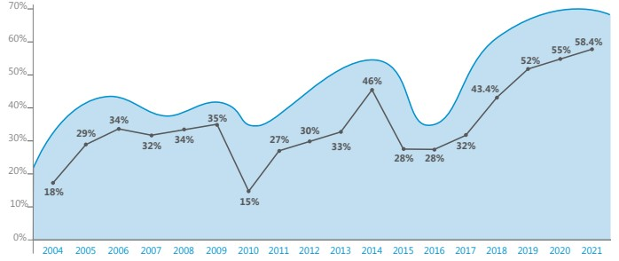

ОБРАЩЕНИЕ УПРАВЛЯЮЩЕГО ДИРЕКТОРА
Будучи ответственным Оператором, компания NCOC осуществляет свою деятельность на
основе принципов устойчивого развития. Мы обеспечиваем такое развитие благодаря
решению сложных задач и поиску выгодных возможностей не только для компании, но и
для всех заинтересованных сторон, местного населения в регионах нашей деятельности и
Республики Казахстан в целом.
2021 год был знаменательным и наполненным важными событиями как для Казахстана, так
и для NCOC. Поздравляя Республику с 30-летием независимости, мы отмечали пятилетие
коммерческой нефтедобычи на месторождении Кашаган. К этому этапу мы подошли, достигнув
объема в 500 миллионов баррелей нефти с начала добычи. Я испытываю особую гордость за
преданность делу и целеустремленность, которые демонстрировал наш коллектив в течение
прошедших лет для достижения намеченных производственных целей по безопасной,
стабильной и надежной нефтедобыче на Кашагане.
Наши результаты демонстрируют не только успешность бизнеса, но и исключительный
профессионализм сотрудников, их бескомпромиссную самоотдачу и приверженность
ценностям NCOC при реализации стратегии компании. Безопасность – наша главная ценность.
Отсутствие происшествий остается нашей приоритетной целью, которая требует постоянного
совершенствования показателей безопасности посредством тренингов, мониторинга и
развития культуры, в которой безопасность является ключевым индикатором успешного
производства. В 2021 году показатели безопасности NCOC демонстрировали позитивную
динамику, и компания завершила год с отличными результатами: рекордно низким уровнем
регистрируемых травм и показателем случаев временной нетрудоспособности 0,15.
Более того, NCOC остается лучшей компанией в отрасли по эксплуатационной готовности и
надежности технологического оборудования, а также удерживает объемы сжигания газа на
факеле на самом низком уровне среди подобных производств. В 2021 году сжигание составило
всего 0,34% от общего объема добычи попутного газа, и этот показатель значительно ниже
значений Международной ассоциации производителей нефти и газа в странах Европейского
Союза.
Качество воздуха вызывает особую обеспокоенность у жителей Атырауской области. Как
вы знаете из наших предыдущих отчетов, в Западном Ескене, близлежащих селениях и
городе Атырау работают 20 автоматических станций мониторинга качества воздуха. Эти
станции осуществляют постоянный мониторинг параметров воздуха, подтверждая, что
производственные объекты NCOC работают в пределах допустимых норм, не допуская
вредного воздействия в Атырау. Кроме того, в 2021 году завершились комплексные
исследования качества воздуха, инициированные в ответ на общественный запрос. Они
велись национальными исследовательскими центрами при полной поддержке NCOC.
Исследования такого масштаба проводились в Казахстане впервые. Во исполнение взятого на
себя обязательства перед общественностью мы представили результаты этих исследований в
конце года в ходе специально организованного круглого стола.
Люди, работающие на Северо-Каспийском проекте, являются нашим самым ценным активом.
С 2016 года NCOC сократила количество привлеченного иностранного персонала почти на
50% и за четыре года в 1,5 раза перевыполнила план по комплектованию национальными
кадрами. Я очень рад слаженной командной работе с моими коллегами – казахстанцами,
составляющими более 50% высшего руководства компании. В стремлении к многообразию и
равным возможностям мы прилагаем все усилия, чтобы достичь и гендерного баланса среди
наших сотрудников.
Развитие местного содержания – важнейшая составляющая стабильного экономического
роста. На протяжении прошедших десятилетий Северо-Каспийский проект привлек в регион
крупные инвестиции, направленные на развитие местных кадров, поставщиков, а также
инфраструктуры, привнеся значительный вклад в создание и укрепление новых отраслей
экономики Казахстана. В 2021 году мы продолжили улучшать свои показатели по местному
содержанию, направив более 58% всех расходов на закуп местных товаров, работ и услуг. Это
самый высокий показатель, достигнутый за последние 17 лет, и мы продолжим работать над
увеличением нашей ценности для страны.
А теперь заглянем в будущее Северо-Каспийского проекта. Здесь следует упомянуть о
газоперерабатывающем заводе, куда планируется передача 1 миллиарда кубических метров
сырого газа с месторождения Кашаган. Строительство завода началось третьей стороной в 2021
году. Данный проект позволит NCOC увеличить объем добычи нефти, который в настоящее
время ограничен из-за проблем утилизации газа, а Казахстану – расширить ресурсную базу
для дальнейшей газификации страны, получить толчок для развития газоперерабатывающей
отрасли и создать новые рабочие места в регионе.
Еще одним важным условием для реализации проектов будущего расширения является
проведение дноуглубительных работ. В связи с падением уровня Каспийского моря и его
обмелением в районе морских объектов NCOC дноуглубительные работы стали необходимыми
для продолжения морской навигации и поддержки безопасных производственных операций
на месторождении Кашаган. Работы строго ограничены навигационными маршрутами, для них
используются лучшие из доступных технологий и ведется постоянный мониторинг различных
экологических параметров по всей акватории Северного Каспия.
NCOC осуществляет свою деятельность на основе принципов ответственности, прозрачности
и соблюдения законности. Мы всегда были открыты для общественности, в том числе через
«Горячую линию» для поставщиков и сотрудников, которая обслуживается независимой
компанией, обеспечивающей конфиденциальность и анонимность. В 2021 году мы сделали
новые шаги для сближения с обществом через страницы в социальных сетях. На протяжении
года мы информировали все заинтересованные стороны о нашей деятельности в Instagram,
Facebook, LinkedIn и Youtube, привлекая тысячи подписчиков и просмотров. Мы благодарны
каждому, кто проявляет к нам интерес.
Наша компания стремится принести максимально возможную пользу Казахстану и внести
посильный вклад в его динамичное развитие. Я горжусь нашими текущими достижениями, но
уверен, что мы добьемся еще больших успехов. Мы продолжим информировать вас о нашей
деятельности в различных сферах на страницах ежегодного отчета об устойчивом развитии.
С уважением,
Оливье Лазар,
Управляющий директор
компании NCOC
ЦЕЛИ В ОБЛАСТИ
УСТОЙЧИВОГО РАЗВИТИЯ
Цели ООН в области устойчивого развития направлены на решение насущных мировых экономических, социальных и экологических
проблем. Мы внедрили 11 из этих целей в нашу корпоративную культуру и способствуем их достижению в Казахстане.
Мы пропагандируем здоровый образ жизни среди наших сотрудников и их семей, подрядчиков, а также в целом населения в регионах своей деятельности.
Мы инвестируем в качественное образование и профессиональное обучение местного населения.
Мы предоставляем равные возможности для карьерного роста, компенсационные выплаты и льготы для всех сотрудников.
Мы сохраняем запасы пресной воды в регионах своей деятельности посредством опреснения, эффективного использования водных ресурсов, очистки сточных вод и применения технологий оборотного водопользования. Мы следуем политике нулевых сбросов в поверхностные водоемы, в том числе в Каспийское море.
Мы вносим вклад в устойчивое экономическое развитие и предоставляем всем возможность достойной работы.
Мы инвестируем в создание надежной инфраструктуры в регионах своей деятельности и более широкое внедрение чистых и безопасных для окружающей среды технологий и производственных процессов.
Мы обеспечиваем ответственное потребление и производство, сокращаем объемы образования отходов и выбросов в атмосферу, способствуем повышению энергоэффективности и следуем политике нулевых сбросов.
Мы стремимся минимизировать наше воздействие на изменение климата.
Мы осуществляем нашу деятельность в соответствии с экологическими требованиями, расширяем научные знания и возможности для исследовательской деятельности с целью сохранения уникального биоразнообразия Каспийского моря.
Мы активно поддерживаем инициативы по озеленению в регионах своей деятельности и реализуем «План действий компании по сохранению биоразнообразия».
Мы следуем принципам честности, добросовестности и справедливости во всех аспектах своей деятельности.

ОСНОВНЫЕ ДОСТИЖЕНИЯ В 2021 ГОДУ


УПРАВЛЕНИЕ КОМПАНИИ
И ДЕЛОВАЯ ЭТИКА
3.1. СИСТЕМА РУКОВОДСТВА И УПРАВЛЕНИЯ КОМПАНИИ
Реализация Северо-Каспийского проекта осуществляется в рамках Соглашения о разделе продукции по Северному Каспию (СРПСК), подписанного Республикой Казахстан и международным консорциумом крупных нефтегазовых компаний в 1997 году.
В состав этого консорциума входят семь крупнейших и наиболее опытных в мире энергетических компаний: «КазМунайГаз», «Эни», «Шелл», «ЭксонМобил», «ТотальЭнерджиз», «КННК» и «Инпекс». Каждый акционер самостоятельно несет ответственность за транспортировку и сбыт своей доли продукции, представление отчетности и разделение этой продукции с Правительством РК согласно СРПСК.
Управление проектом осуществляется Оператором, который действует от имени акционеров. До 2015 года в рамках Северо-Каспийского проекта действовала операционная модель, согласно которой Оператор делегировал определенные работы по освоению и добыче четырем компаниям – «агентам». В конце 2014 года акционеры пришли к согла
шению о дальнейшей интеграции и консолидации управления посредством назначения
единого Оператора – «Норт Каспиан Оперейтинг Компани Н. В.» (NCOC1
). Первым руководителем компании NCOC является управляющий директор.
шению о дальнейшей интеграции и консолидации управления посредством назначения
единого Оператора – «Норт Каспиан Оперейтинг Компани Н. В.» (NCOC1
). Первым руководителем компании NCOC является управляющий директор.
- ISO 9001 – система управление качеством (QMS);
- ISO 9001 – система управление качеством (QMS);
- ISO 45001 – система управления охраной здоровья и труда персонала (OH&MS).
3.2. ДЕЛОВАЯ ЭТИКА
Честность, добросовестность и справедливость во всех аспектах деятельности NCOC являются основополагающими принципами, и компания требует, чтобы им следовали все, с кем мы ведем бизнес.
АКЦИОНЕРЫ


В настоящем документе аббревиатура NCOC означает исключительно «North Caspian Operating Company N. V.». Термин «Оператор» может относится к NCOC или к любому другому предыдущему Оператору по СРПСК в зависимости от контекста.
Общие принципы деятельности NCOC применяются ко всем аспектам деятельности компании. Они содержат описание ожиданий относительно поведения каждого работника, включая казахстанский персонал на прямом найме, прикомандированных сотрудников и персонал подрядчиков. Кроме того, от всего персонала NCOC требуется соблюдение кодекса деловой этики, в котором описано, как следует применять общие принципы деятельности в соответствии с основными ценностями компании. В нем представлены практические указания по

денциальном порядке сообщить об этом супервайзеру, специалисту по деловой этике и соблюдению этических норм в NCOC или по линии прямой связи по вопросам соблюдения этических норм для проведения дальнейшего расследования и возможного принятия дисциплинарных мер. Линия прямой связи по вопросам соблюдения этических норм представляет собой веб-сайт, управляемый третьей стороной (http://www.ncoc. deloitte-hotline.com), адрес электронной почты (ncoc.hotline@deloitte.kz) и номер телефона (8 800 080 15 65), которыми может воспользоваться любое лицо, чтобы сообщить о подозреваемом нарушении закона, общих принципов деятельности NCOC и кодекса деловой этики, в том числе на условиях анонимности.

Персонал NCOC, поставщики, подрядчики или
любые другие стороны могут поднять вопрос,
вызывающий у них обеспокоенность, или сообщить о возможном несоответствии ценностям и принципам компании
специалисту по
деловой этике и соблюдению этических норм
NCOC или воспользоваться для этих целей
линией прямой связи, включая анонимное
обращение. Подробности таких сообщений
остаются конфиденциальными. Специалист
по деловой этике и соблюдению этических
норм рассматривает обращения, и, в случае
подтверждения указанных фактов, руководство NCOC принимает меры в соответствии
с выявленными обстоятельствами. Компания
не допускает преследования в отношении
лиц, сообщивших о предполагаемом нарушении общих принципов деятельности, кодекса
деловой этики, руководства по борьбе со взяточничеством и коррупцией или положений
применимого законодательства.
Ежегодно в целях формирования этической
культуры на рабочем месте NCOC проводит
обучение по деловой этике и соблюдению
этических норм для своих сотрудников и основных подрядчиков.
3.3. НЕЗАВИСИМЫЙ КОНСУЛЬТАТИВНЫЙ СОВЕТ
Мы продолжаем успешно разрабатывать Отчет об устойчивом развитии NCOC в тесном сотрудничестве с Независимым консультативным советом (НКС) под руководством Шынар Изтелеуовой, директора Жайык-Каспийского Орхусского центра в Атырау. В течение 5 лет совет, в состав которого входят представители ведущих экологических и социальных НПО, ученые и члены Казахстанского бизнес-совета по устойчивому развитию, дает нам рекомендации о наилучшем способе освещения деятельности NCOC и наиболее прозрачном подходе к предоставлению информации для общественности.
Совместные обсуждения позволили определить положительные результаты деятельности NCOC в экологической и социальной сферах, а также выявить вопросы, требующие более пристального внимания и улучшения.
НЕЗАВИСИМЫЙ КОНСУЛЬТАТИВНЫЙ СОВЕТ
Шынар
ИЗТЕЛЕУОВА
Aтырау
Директор Жайык-Каспийского Орхусского Центра
Жаксыгуль
МАХАНБЕТОВА
Актау
Руководитель группы базового направления центра мониторинга региональных проектов АО «СЭЗ ʺМорпорт Актауʺ»

Кирилл
ОСИН
Aктау
Директор НПО «Эко Мангистау», общественный деятель в области охраны окружающей среды, развития экотуризма и волонтерского движения

Галина
АРТЮХИНА
Алматы
Исполнительный директор Казахстанской ассоциации природопользователей для устойчивого развития (BCSD Kazakhstan)
Главный редактор журнала «Экология и промышленность»
Национальный эксперт по охране окружающей среды, зеленой экономике и устойчивому развитию в Республике Казахстан
Галина
ЧЕРНОВА
Атырау
Председатель НПО «Центр Глобус» по экологической правовой инициативе
Инициатор общественного мониторинга и общественной экспертизы социальных и инвестиционных проектов, осуществляемых инвесторами в Атырауской области

Гульжамал
ТУЛЕМИСОВА
Атырау
Старший преподаватель кафедры химии и химической технологии Атырауского государственного университета им. Х. Досмухамедова
Заведующая учебной научно-исследовательской лабораторией «Экология»
Куаныш
КУСМОЛДАНОВ
Атырау
Руководитель Центра грантовых проектов Атырауского университета нефти и газа им С. Утебаева
Жансая
ИСМАГУЛОВА
Актау
Руководитель управления «Маркетинг и коммуникации» НАО «Каспийский университет технологий и инжиниринга им. Ш. Есенова»
ПОКАЗАТЕЛИ ДЕЯТЕЛЬНОСТИ NCOC
| 2018 | 2019 | 2020 | 2021 | |
| ПРОИЗВОДСТВО | ||||
Объем добычи нефти (на устье скважин, млн тонн) |
13.22 | 14.13 | 15.14 | 16.24 |
| Объем добычи газа (на устье скважин, млрд стандартных кубических метров) | 7.70 | 8.45 | 9.15 | 9.88 |
|
2.24 | 3.15 | 3.81 | 4.31 |
| Объем экспорта произведенной серы (тыс. тонн) | 1,056 | 1,207 | 1,228 | 1,234 |
|
1,409 | 1,527 | 1,594 | 1,696 |
| ОХРАНА ЗДОРОВЬЯ И ТРУДА | ||||
Производственные травмы и заболевания |
||||
|
0.44 | 0.88 | 0.23 | 0.15 |
|
0.66 | 0.47 | 0.15 | 0.16 |
|
0.36 | 1.01 | 0.27 | 0.15 |
|
0.09 | 0.11 | 0.06 | 0.15 |
|
0.17 | 0 | 0 | 0.16 |
|
0.06 | 0.14 | 0.09 | 0.15 |
|
0 | 0 | 0 | 0 |
|
0 | 0 | 0 | 0 |
|
0 | 0 | 0 | 0 |
Количество происшествий уровня 1, связанных с технологической безопасностью (согласно API RP 7542) |
0 | 0 | 0 | 0 |
Количество происшествий уровня 2, связанных с технологической безопасностью (согласно API RP 7542) |
2 | 0 | 0 | 0 |
API RP 754 – практические рекомендации Американского нефтяного института, которые подразделяют показатели технологической безопасности нефтехимической и нефтеперерабатывающей отраслей на четыре уровня. Уровни 1 и 2 допускают опубликование отчетности. См http://www.api.org қараңыз.
| 2018 | 2019 | 2020 | 2021 | |
| ОХРАНА ОКРУЖАЮЩЕЙ СРЕДЫ | ||||
Эмиссии парниковых газов |
||||
|
3,333 | 3,068 | 3,035 | 3,190 |
|
3,158 | 2,885 | 2,842 | 2,986 |
|
167 | 175 | 184 | 196 |
|
8 | 7,9 | 8,8 | 8,5 |
|
10 | 8 | 7,5 | 7,8 |
|
180 | 159 | 149 | 148 |
Потребление топливно-энергетических ресурсов |
||||
|
42.25 | 37.63 | 43.14 | 43.45 |
|
2.28 | 1.94 | 2.11 | 2.00 |
|
(0.11) | (0.11) | (0.42) | (0.40) |
Сжигание углеводородов на факеле,млн стандартных7 млн стандартных |
63 | 57.7 | 47.2 | 34 |
Коэффициенты потенциала глобального потепления, используемые для расчета CO2 -эквивалентов, составляют 21 для CH4 и 310 для N2 O для горизонта прогнозирования 100 лет согласно приказу Министерства охраны окружающей среды РК № 280-э(п) от 5 ноября 2010 г. «Об утверждении отдельных методик по расчету выбросов парниковых газов». Расчет выбросов производится на уровне объекта на основании утвержденных методик и требований, установленных в Экологическом кодексе РК и применимых нормативных документах, а также согласно руководящим указаниям по инвентаризации парниковых газов на национальном уровне, выпущенным межправительственной группой экспертов по изменению климата в 2006 г.
Расчеты производятся на основании косвенного потребления электроэнергии с применением коэффициента выбросов на стороне спроса, равного 0,919 т CO2 /МВт-ч для электросети Казахстана (объединенный коэффициент запаса) в 2020 г., согласно документу «Методика расчета коэффициента выбросов для электроэнергетических систем», выпущенному Казахским научно-исследовательским институтом экологии и климата Министерства охраны окружающей среды РК (2012 г.), на основании прилагаемой методики Европейского банка реконструкции и развития (Lahmeyer International, 2012 г.).
Коэффициент нормализации для значений интенсивности в 2021 г. составляет 21,714 миллиона тонн нефтяного эквивалента (тонн нефт. экв.). Этот коэффициент рассчитывается на основании общего объема добычи сырой нефти, сухого газа и газоконденсата на устье (включая газ, сжигаемый на факеле и используемый в качестве топлива, но исключая газ, закачиваемый в пласт) в тоннах нефт. экв. согласно рекомендуемым коэффициентам нормализации для экологических данных, приведенным в 3-м издании (2015 г.) «Руководства по добровольной отчетности в области устойчивого развития компаний нефтегазовой отрасли» Международной ассоциации представителей нефтяной промышленности по охране окружающей среды, стр. 37. Физические объемы в тоннах сырой нефти конвертируются в тонны нефт. экв. путем умножения на коэффициент 1,018 тонн нефт. экв. на тонну нефти. Физические объемы попутного газа конвертируются в тонны нефт. экв. путем умножения на коэффициент 0,932 тонн нефт. экв./тыс. ст. куб. м. Коэффициенты пересчета указаны в приложении 2 к приказу председателя Комитета по статистике Министерства национальной экономики РК № 160 от 11 августа 2016 г. «Об утверждении Методики по формированию топливно-энергетического баланса и расчету отдельных статистических показателей, характеризующих отрасль энергетики».
1 мегаватт-час (МВт-ч) = 3,6 гигаджоуля (ГДж)
Стандартные кубические метры при 20°С и 1 атм. Формат отчетности об объемах сжигания на факеле установлен в постановлении Правительства РК № 1104 от 16 октября 2014 г.
| 2018 | 2019 | 2020 | 2021 | |
Пресная вода |
||||
|
964 | 1,064 | 812 | 871 |
|
36 | 39 | 17.5 | 30.8 |
|
1,000 | 940 | 762 | 871 |
|
52 | 55 | 40 | 40 |
Контролируемый сброс в поверхностные воды |
||||
|
0 | 0 | 0 | 0 |
Выбросы в атмосферу |
||||
|
943 | 1,113 | 947 | 828 |
|
27,949 | 22,760 | 14,899 | 11,161 |
|
2,550 | 3,711 | 3,818 | 4,012 |
Разливы в окружающую среду |
||||
|
0 | 0 | 0 | 0 |
|
0 | 0 | 0 | 0 |
Отходы |
||||
|
10,976 | 13,726 | 4,839 | 12,142 |
|
5,731 | 9,092 | 3,149 | 9,581 |
| СОЦИАЛЬНО-ЭКОНОМИЧЕСКАЯ СФЕРА | ||||
Замещение иностранных специалистов казахстанскими кадрами в NCOC8 |
||||
|
80 | 82 | 85 | 87 |
|
95 | 95 | 95 | 97 |
|
100 | 100 | 100 | 100 |
Состав персонала NCOCпроцентная доля женщин |
32 | 29.18 | 32 | 30 |
Совокупное количество граждан Казахстана, проходящих обучение при финансовой поддержке NCOCтыс. человек |
16 | 18 | 19.3 | 22.2 |
Совокупная стоимость интенсивного профессионального обучения для работников NCOCявляющихся гражданами Казахстана, млн долларов США |
263 | 289 | 291 | 294 |
Совокупные выплаты местным поставщикам за товары, работы и услуги9,млрд долларов США |
14.1 | 14.8 | 15.3 | 15.9 |
Совокупный прямой вклад в развитие социальной инфраструктуры и благотворительность в Атырауской и Мангистауской областяхмлн долларов США |
640 | 718.1 | 818.5 | 887 |
Только работники NCOC. Руководящие должности соответствуют категориям 1 и 2 по СРПСК, инженерно-технические должности соответствуют категориям 3 и 4 по СРПСК, рабочие и вспомогательные должности соответствуют категории 5 по СРПСК.
Определение местных товаров, работ и услуг приведено в Единой методике расчета местного содержания, установленной в Законе РК «О недрах и недропользовании» от 2010 г.

РАЗМНОЖЕНИЕ
Большинство самок каспийского тюленя щенится в конце
января – начале февраля. В последние годы щенные залежки тюленей образуются в основном в казахстанской части
ледового массива.
Бельки (так называют новорожденных тюленят) имеют высокий, мягкий волосяной покров светлого
зеленовато-желтоватого цвета. Смена младенческого покрова начинается
по достижению ими двухнедельного возраста. На протяжении трех недель мать кормит детеныша питательным жирным
молоком. В конце февраля – начале марта молочное
вскармливание прекращается, и детеныши начинают самостоятельную жизнь.

Новорожденные детеныши (бельки):

ДЛИНА
65-79 см

ВЕС
5 кг
Трехнедельный тюлень
(по окончании молочного
вскармливания):
ДЛИНА
85 см
ВЕС
15 кг
ОХРАНА
ЗДОРОВЬЯ И ТРУДА
5.1. ОХРАНА ТРУДА
Здоровье и безопасность наших сотрудников и подрядчиков имеют первостепенное
значение, и это означает обязательство по
достижению нулевых травм. Забота о людях
является одной из ценностей NCOC, поэтому
выполнение обязательства по охране здоровья и труда является нашим основным приоритетом. Надежные системы
и процессы
формируют основу нашего подхода к управлению охраной здоровья и труда. Политика
компании заключается в том, чтобы ежедневно обеспечивать отсутствие вредного
воздействия и утечек на всех наших рабочих
участках. Мы с гордостью называем это нашим обязательством по достижению «Нулевого целевого показателя».
NCOC устраняет или снижает риски путем выявления опасных факторов, принятия мер по
их снижению и обмена полученными знаниями. Все сотрудники компании проходят обучение и наделены
полномочиями по выявлению опасных производственных факторов.
Мы ожидаем, что любой сотрудник остановит
работу, которая может быть небезопасной.
Уведомления об опасных факторах распространяются по нашей системе оповещения о
происшествиях, направленной на то, чтобы
передавать эту информацию всем заинтересованным сторонам, принимать меры контроля
и изучать извлеченные уроки в ходе всех производственных операций.
В 2021 году мы разрабатывали проекты по повышению безопасности труда, направленные
на выявление опасных факторов и управление рисками, обеспечение безопасности труда в подрядных
организациях, формирование
лидирующей роли в области безопасности
труда и расследование происшествий. Мы
особенно гордимся проделанной работой по
повышению безопасности труда в тесном сотрудничестве с нашими подрядчиками. В 2021
году руководство NCOC совместно с высшим
руководством крупных подрядчиков компании обсудили стратегии и практические меры
по улучшению культуры безопасности труда
и достижению нашей амбициозной цели по
«Нулевому целевому показателю».
Мы стремимся формировать культуру безопасности труда не только для обеспечения
соответствия требованиям. Для нас важно,
чтобы люди понимали, что мы прислушиваемся к их мнению и заботимся о них, и не
боялись поднимать вопросы, вызывающие
у них обеспокоенность. В нашей компании
созданы три комитета по обеспечению безопасности персонала, которые предоставляют возможность сотрудникам
и подрядчикам учиться управлять опасными факторами
в своей работе и делиться идеями друг с другом. Обсуждения и кампании, проведенные
в NCOC в 2021 году, были посвящены темам
совместной работы и взаимодействия, дорожной безопасности и предотвращению
потери бдительности в отношении таких повседневных рисков, как риски поскальзывания, спотыкания и
падения.
В 2021 году, как и в предыдущем, мы достигли высоких показателей в области безопасности труда и завершили
год с хорошими
результатами. Количество травм на миллион отработанных часов – общий уровень регистрируемых травм (ОУРТ) – составило 0,15. Количество травм, которые привели к временной нетрудоспособности (ЧСВН), немного возросло по сравнению с 2020 годом и составило 0,15.
нашей постоянной работе по снижению мелких происшествий.
Мы продолжим разработку стратегий, направленных на выявление и управление ситуациями или работами, которые
имеют высокую
вероятность серьезных травм. Эти стратегии,
| 2015 | 2016 | 2017 | 2018 | 2019 | 2020 | 2021 | |
ОБЩИЙ УРОВЕНЬ РЕГИСТРИРУЕМЫХ ТРАВМ |
24 | 31 | 15 | 10 | 24 | 4 | 3 |
СЛУЧАИ ВРЕМЕННОЙ НЕТРУДОСПОСОБНОСТИ |
9 | 11 | 8 | 2 | 3 | 1 | 3 |
Кроме того, мы продолжили работу по исключению происшествий с высокой вероятностью серьезных последствий
(ПВВСП).
Завершившийся 2021 год стал вторым
подряд годом с нулевым показателем по
ПВВСП.
Несмотря на обнадеживающие результаты в
постоянном повышении безопасности на рабочем месте, особенно по показателю ОЧРП
(общее число регистрируемых происшествий), выполняя свою задачу по исключению
всех травм, мы будем уделять больше внимания исключению серьезных травм и изменяющих жизнь происшествий в
дополнение к
ПИРАМИДА ПРОИСШЕСТВИЙ
С ВЫСОКОЙ ВЕРОЯТНОСТЬЮ
СЕРЬЕЗНЫХ ПОСЛЕДСТВИЙ ЗА 2021 ГОД
ПИРАМИДАСЫ
Числа в ромбе белого цвета указывают на количество происшествий с фактической или потенциальной степенью тяжести; смертельные случаи или изменяющие жизнь травмы – происшествия с высокой вероятностью серьезных последствий.
как обычно, включают обеспечение защитных барьеров и проведение обучения. Кроме
того, мы также будем уделять больше внимания поиску возможностей помощи нашим работникам в ситуациях с
высокими рисками, в
частности обеспечивая наличие средств контроля и управления, их эффективность и использование.
Мы признаем, что человеческий фактор является причиной почти каждого серьезного
происшествия. С начала 2022 года основное
внимание сосредоточено на улучшении работы персонала, а повышение эффективности
защитных мер стало ключевым фактором в
достижении «Нулевого целевого показателя»
на рабочих местах в соответствии с принципом «Отсутствие вреда и утечек». Таким образом, компания
продолжает повышать профессионализм сотрудников, которые несут
ответственность за обеспечение защитных
мер и надлежащее управление ими. Одним
из примеров в этой связи является структурированная Программа посещения руководи
телями производственных участков, которая способствует взаимодействию руководителей NCOC с рабочими.
5.2. ТРАНСПОРТНАЯ БЕЗОПАСНОСТЬ
Транспортная безопасность остается приоритетной задачей NCOC в обеспечении безопасной деятельности по
логистике, включая перевозку людей, доставку материалов
и оборудования. Внедрение международных стандартов по управлению рисками для
безопасности, подкрепленных отраслевыми
стандартами и передовыми практиками, является главным направлением в обеспечении снижения вероятности
происшествий до
минимума.
Компания продолжает демонстрировать высокие показатели безопасности логистики.
В 2021 году при пробеге автомобильного
транспорта 13 миллионов километров, 450
летных часах вертолетов и многочисленных
операциях морского флота не было заре
гистрировано ни одного случая серьезных,
крупных и катастрофических происшествий
с участием автомобильного, воздушного и
морского транспорта. Важно отметить, что
мы второй год подряд достигаем отличных
показателей безопасности в зимнее время.
Что касается автомобильного транспорта,
все транспортные средства компании оборудованы бортовой системой контроля (БСК),
которая позволяет контролировать поведение водителя на дороге, включая скоростной
режим, резкое торможение и использование
ремней безопасности. Разработаны программы, в рамках которых все водители легковых
автомобилей проходят обязательное обучение по безопасному вождению один раз в два
года, а водители автобусов – один раз в год. В
2021 году камеры были установлены в салонах всех пассажирских транспортных средств.
Эта дополнительная мера контроля позволяет нам извлекать опыт из происшествий с тем,
чтобы повышать профессионализм водителей в области безопасного вождения.
В связи с постоянной угрозой появления
животных на дорогах в Казахстане мы продолжаем оказывать поддержку местному
населению и предоставляем фермерам светоотражающие краски и ленты. Эти средства
способствуют снижению вероятности дорожно-транспортных происшествий с участием
животных в темное время суток, а также в условиях низкой видимости на дорогах.
В 2021 году NCOC установила пункты контроля за ледовыми условиями на дороге на самых
опасных участках трассы Атырау – Карабатан
– Доссор. Цель этого уникального проекта
заключалась во внедрении системы, обеспечивающей мониторинг ледовых условий на
дороге в режиме реального времени. Данная
система введена в действие и позволяет группе контроля дорожной безопасности получать обновленную
информацию о гололеде
на дороге каждые 10 минут. Она включает в
себя типовые датчики для регистрации погодных и дорожных условий (а именно температуры воздуха, влажности,
ветра, видимости и
обледенения дороги), оборудована инфракрасным датчиком для измерения температуры дорожного полотна и камерой.
5.3. ТЕХНОЛОГИЧЕСКАЯ БЕЗОПАСНОСТЬ И ЦЕЛОСТНОСТЬ АКТИВОВ
Технологическая безопасность обеспечивается благодаря специальным защитным мерам или барьерам, направленным на поддержание безопасности объектов NCOC и герметичности систем, содержащих продукцию.
Наша цель заключается в исключении потенциального воздействия на людей, окружающую среду и активы
компании. Любой внеплановый выброс опасных веществ считается
происшествием, связанным с технологической безопасностью. В компании используются соответствующие
технологии и процессы
для предотвращения, контроля и снижения
воздействия происшествий, связанных с технологической безопасностью.
Эффективные защитные меры могут включать оборудование и/или персонал, а также
могут быть активными, пассивными или процессуальными.
При необходимости мы используем резервные меры для снижения рисков и обеспечения нескольких защитных мер в
зависимости от серьезности потенциального
опасного фактора. Мы постоянно работаем
над повышением культуры и улучшением
работы в области технологической безопасности в масштабах NCOC. Специалисты по
производственной и технологической безопасности ежемесячно проводят совещания
с целью обмена знаниями и обсуждения передовых практик для непрерывного совершенствования.
-
инженеры по возможности разрабатывают процессы на основе принципов неотъемлемой безопасности и передовых отраслевых систем безопасности с учетом новых знаний и технологий;
-
проводится текущее техническое обслуживание для обеспечения эффективности защитных мер, снижения воздействия опасных технологических факторов и поддержания целостности активов;
-
специалисты по технологической безопасности анализируют случаи отказов оборудования, чтобы понять их механизм, и делятся полученными знаниями с персоналом компании.
Повышение осведомленности и компетентности в области технологической безопасности в масштабах компании также является одной из наших ключевых целей. Для ее достижения основные принципы технологической безопасности были обновлены посредством разработки простых и осуществимых передовых производственных практик, которые направлены на предотвращение внеплановых выбросов опасных веществ. Также был внедрен комплексный процесс обеспечения должного уровня компетентности, позволяющий сотрудникам овладеть навыками, необходимыми для выполнения порученных им задач в области безопасности.
Основные принципы технологической безопасности
NCOC продолжает усиливать защитные меры
при выполнении персоналом критичных производственных задач благодаря внедрению
основных принципов технологической безопасности. Они содержат четкие указания по
применению передовых производственных
практик, направленных на предотвращение внеплановых выбросов опасных веществ. Компания настоятельно
рекомендует своим сотрудникам и подрядчикам использовать эти принципы
в ходе ежедневных обсуждений для выявления
проблемных вопросов в области безопасности
с целью их последующего решения
В 2021 году была проведена оценка защитных
технических устройств на объектах наземного
и морского комплексов в рамках ежегодной
программы по обеспечению целостности активов. Программа направлена на подтверждение состояния технической
целостности
критичных для производственной безопасности элементов. Кроме того, были разработаны базовые требования по
технологической
безопасности, которые включают описание
основных задач в этой области с учетом связанных с ней наиболее вероятных происшествий, выявленных на
основе отраслевого
опыта. Эти требования способствуют обеспечению защитных мер для предотвращения
вышеуказанных происшествий. Также акци
онеры NCOC провели независимый анализ
эффективности систем и средств контроля в
области технологической безопасности компании. Были изучены стандарты и процедуры
по эксплуатации, организованы посещения
производственных участков для оценки технологической безопасности на местах и предоставления
комментариев.
В компании ведется документация по производственной безопасности в рамках ОЗТОС
и используется причинно-следственный анализ рисков для выявления опасных факторов
в области технологической безопасности и
управления ими благодаря принятию профилактических и ответных защитных мер.
Регулярно проводятся проверки, испытания
и техническое обслуживание с целью обеспечения соответствия этих защитных мер отраслевым стандартам.
Показатели технологической безопасности
Согласно отраслевым стандартам компания NCOC проводит оценку и уведомляет о происшествиях, связанных с технологической безопасностью, в соответствии с их значимостью, установленной в стандарте API 754. В 2021 году нам удалось повторить успех 2019 и 2020 годов и достичь нулевого показателя по происшествиям уровней 1 и 2, связанным с технологической безопасностью.
ПРОИСШЕСТВИЯ УРОВНЕЙ 1 И 2, СВЯЗАННЫЕ С ТЕХНОЛОГИЧЕСКОЙ БЕЗОПАСНОСТЬЮ, ЗА ПЕРИОД С 2017-ГО ПО 2021 ГОД
ЗАЩИТА
ОКРУЖАЮЩЕЙ СРЕДЫ
6.1. БИОРАЗНООБРАЗИЕ ЭКОСИСТЕМЫ КАСПИЙСКОГО РЕГИОНА
Каспийское море представляет собой уникальную экосистему с редкими и эндемич
ными видами, которые не встречаются нигде
в мире. На сегодняшний день его состояние
подвергается глобальным изменениям под
влиянием природных и антропогенных факторов. Защита и сохранение этого уникального региона является
первостепенной задачей
в деятельности NCOC.
Благодаря различным исследованиям, которые
проводятся с 1993 года, компания NCOC обладает обширной базой экологических данных,
которая позволит выработать и принять меры,
необходимые для решения важных задач – создания особо охраняемых природных территорий и сохранения на них
биоразнообразия в
условиях меняющегося климата и роста хозяйственной деятельности на Каспии.
РАТИФИКАЦИЯ ПРОТОКОЛА ПО СОХРАНЕНИЮ
БИОЛОГИЧЕСКОГО РАЗНООБРАЗИЯ
В 2021 году Казахстан принял закон «О ратификации Протокола по сохранению
биологического разнообразия к Рамочной
конвенции по защите морской среды Каспийского моря».
Согласно этому закону каждая страна каспийского региона с
согласия других стран может выделять охраняемые районы в
морской среде и на прибрежной территории с целью защиты:
- мест обитания, жизненно важных для выживания, размножения и восстановления находящихся под угрозой исчезновения или эндемичных видов флоры и фауны;
- объектов особой важности ввиду их научной, эстетической, культурной или образовательной значимости.
С момента подписания закона компания NCOC принимает активное участие в инициативах министерства экологии, геологии и природных ресурсов Республики Казахстан по разработке и созданию в Северном Каспии особо охраняемых природных территорий (ООПТ) и государственного природного резервата «Тюлень»
Для NCOC освоение месторождения на море – это не только добыча углеводородов, но и возможность внести свой вклад в работы в области охраны окружающей среды на Северном Каспии в рамках масштабной программы компании по защите экосистемы моря, которая включает:
-
проведение исследований (мониторинга) состояния растительного и животного мира;
-
изучение биологического разнообразия на море и суше с целью его сохранения;
-
использование передового опыта;
-
поддержку природоохранных программ и информирование населения о биоразнообразии региона.
Проводимые NCOC работы по изучению и сохранению биологического разнообразия включают в себя:
-
ежегодные наблюдения за параметрами окружающей среды на суше и море в рамках производственного мониторинга;
-
исследования популяции каспийского тюленя;
-
орнитологические наблюдения;
-
создание геоинформационной системы по биоразнообразию;
-
проведение озеленительных работ;
-
создание карты чувствительности северо-восточной части Каспийского моря;
-
исследования колонизации искусственных островов донными организмами;
-
выпуск молоди искусственно выращенных осетровых рыб в Жайык-Каспийский бассейн.
NCOC активно использует для исследования и сохранения биоразнообразия такие
передовые инновационные технологии, как
беспилотные летательные аппараты в изучении животного мира, мультиспектральная съемка популяции
каспийского тюленя,
современное оборудование на атырауских
осетровых рыбоводных заводах, и другие.
В рамках программы повышения осведомленности населения в
вопросах сохранения
биоразнообразия экологи компании пре
доставляют данные по биоразнообразию, публикуют научно-популярную информацию, выпускают видеофильмы, поддерживают мероприятия, посвященные охране окружающей среды, оказывают консультационную помощь школьникам и студентам региона.
АНАЛИЗ КОНКРЕТНОГО ПРИМЕРА
Посадка деревьев
В рамках проекта «Обоснование размеров санитарно-защитной зоны УКПНиГ “Болашак”»
компания NCOC ведет работы по озеленению территории санитарно-защитной
зоны (СЗЗ) в Западном Ескене в качестве буферной зоны для поглощения выбросов в
атмосферу.
На сегодняшний день площадь озеленения составляет 14,7 гектаров. В течение
2021 года уход за посаженными на СЗЗ и экспериментальном участке Соколок деревьями и их полив продолжался,
и NCOC планирует осуществлять его в предстоящие
годы. Однако в результате многолетних работ по озеленению участков СЗЗ были выявлены проблемы, с которыми
компания сталкивается при развитии лесозащитной
полосы. В частности, это дефицит воды для полива, соленость почвы и засушливость
климата. По причине этих сложностей компания рассмотрела возможность пересмотра обязательств по озеленению
СЗЗ и замене ее на иные участки в городе Атырау и
его окрестностях.
В связи с этим 20 апреля 2021 года NCOC и акимат Атырауской области подписали Меморандум о взаимопонимании
(МоВ). Согласно условиям МоВ обязательство по проекту СЗЗ будет перенесено на другой участок и закреплено
в проекте ССЗ на 2022 год,
поскольку благоустройство является частью проекта ССЗ.
Согласно отчету о проверке состояния почвы для озеленения были определены следующие участки для посадки
деревьев в период 2021–2025 гг.:
-
194 га возле канала Соколок;
-
73 га в поселке Береке;
-
21 га в поселке Еркинкала (трасса);
-
20 га в Макатском районе.
NCOC совместно с ТОО «Казахский научно-исследовательский институт лесного хозяйства и
агролесомелиорации им. А. Н. Букейхана» (подрядчик по предоставлению услуг)
провели изыскательные работы и приступили к разработке проекта озеленения на указанных участках.
Работы по озеленению участка в поселке Береке начались в сентябре 2021 года. По
состоянию на конец года территория площадью 62 га ограждена и очищена от твердых
бытовых отходов, почва на ней подготовлена под посадку, закуплены насосы и материалы для капельного
орошения, приобретен посадочный материал и высажены деревья
на участке площадью более 10 га. Посадка деревьев продолжилась весной 2022 года.
При посадке деревьев и кустарников в Атырауском регионе необходимо учитывать
особые агротехнические условия, связанные с преобладанием солей сульфидов и
хлоридов в почве. Солоноватая почва становится причиной гибели многих видов деревьев. Атырауская область
отличается самым низким уровнем атмосферных осадков
в Казахстане – менее 200 мл в год (3-4 дождя за сезон). Компания NCOC привлекла к
работе подрядчика по предоставлению услуг, который имеет большой опыт работы
по выбору и выращиванию посадочного материала в таких природных условиях. Посадочный материал включает
жаро- и солеустойчивые районированные породы семейства вяза мелколистного и крупнолистного (карагач),
ясень обыкновенный, акацию
белую и желтую (карагана), лох узколистный, бирючину и тамарикс.
Орошение проводится капиллярным путем, поэтому полив достигает каждое дерево,
способствует экономии влаги и не создает вторичного засорения почвы.
В программу озеленения входит обязательное применение органических и минеральных удобрений.
Каспийский тюлень
Каспийская нерпа или каспийский тюлень,
Pusa caspica (Gmelin, 1788) – единственный
вид морских млекопитающих, обитающий
по всей акватории Каспийского моря. Этот
эндемичный вид играет уникальную роль,
являясь замыкающим звеном в трофической цепи каспийской водной экосистемы, и
поэтому считается индикатором ее состояния.
В XX веке наблюдалось устойчивое снижение количества особей каспийского тюленя
в силу ряда естественных причин, антропогенных и техногенных факторов. К таким
причинам относятся уменьшение кормовой
базы, промысловый бой тюленя в середине прошлого столетия, различные заболевания, трудности в период
размножения,
неблагоприятные погодные условия, промысел, запутывание в рыболовных сетях и
другое.
Начиная с 2005 года, после начала интенсивной разведки и добычи углеводородов в казахстанском секторе
Каспийского моря компания NCOC организовывала многолетние
исследования каспийского тюленя, включая
ежегодные визуальные авиаучеты.
По данным ученых международной группы
Caspian International Seal Survey (CISS), проводившей исследования при поддержке компании NCOC,
численность каспийских тюленей в
2005 году составляла около 104 тысяч особей,
что на 91% меньше числа, представленного в
данных 1900 года, когда их популяция насчитывала свыше 1,2 миллиона особей.
С 2019 года компания NCOC поддерживает
реализацию казахстанско-российской программы исследований каспийского тюленя
в акватории Северного Каспия, рассчитанной на пять лет, с участием казахстанских и
международных научно-исследовательских
организаций, таких как ТОО «Казахстанское
агентство прикладной экологии», Казахстанский научно-производственный центр
рыбного хозяйства, Научно-производственный центр микробиологии и вирусологии,
Институт проблем экологии и эволюции
им. А. Н. Северцова Российской академии
наук, Всероссийский научно-исследовательский институт рыбного хозяйства и океанографии (ВНИРО).
Программа разработана на основе Конвенции
о правовом статусе Каспийского моря, подписанной 12 августа 2018 года в Актау. Выполнение положений
конвенции способствует
развитию и укреплению сотрудничества между странами Каспийского региона, содействует использованию
Каспийского моря в
мирных целях, рациональному применению
его ресурсов, изучению, защите и сохранению его природной среды.
В ходе недавних исследований в 2012-м,
2020-м и 2021 году выполнялся анализ численности популяции тюленей и ежегодного
приплода. Эти исследования продолжатся в
2022–2023 годах.
Среднее значение ежегодного приплода за
последнее десятилетие составляет 59,07 тыс.
особей; средняя общая численность популя
ции – 286,2 тыс. особей. Рост прослеживается как по численности приплода (от 56,7 тыс.
особей в 2012 г. до 62,26 тыс. особей в 2021 г.),
так и по общей численности популяции
(с 274,7 тыс. особей в 2012 г. до 302,0 тыс. особей в 2021 г.) В среднем за последние 10 лет
ежегодный рост численности популяции каспийского тюленя составляет около 1%.
Таким образом, общая численность популяции каспийского тюленя остается достаточно
стабильной на протяжении последнего десятилетия. При этом наблюдается незначительная, но устойчивая
тенденция к росту, несмотря на существенные метеорологические
изменения в зимний период этих лет. Такая
тенденция демонстрирует высокую адаптивность каспийского тюленя, способствующую
его успешному воспроизводству в разных условиях экологических изменений.
ОЦЕНКА РОЖДАЕМОСТИ И ОБЩЕЙ ЧИСЛЕННОСТИ
ПОПУЛЯЦИИ КАСПИЙСКОГО ТЮЛЕНЯ В 2012–2021 ГОДАХ
| Расчетная численность приплода, тыс. особей | Расчетная общая численность популяции, тыс. особей | |
2012 |
56.70 | 274.7 |
2020 |
58.24 | 282.0 |
2021 |
62.26 | 302.0 |
СРЕДНЕЕ ЗНАЧЕНИЕ |
59.07 | 286.2 |
Ледокольные наблюдения
В ходе зимней навигации 2021 года в период щенки тюленей ледоколы «Тулпар» и «Мангистау-3» совершили восемь рейсов с наблюдателями на борту.
Основная задача наблюдателей – вести учет
тюленей вдоль маршрута движения ледокольных судов и подтверждать соответствие
действий операционного персонала требованиям «Правил по предотвращению воздействия морского судоходства на
тюленей».
Следует отметить, что с момента введения в
действие этих правил в результате производственных операций NCOC, включая ледокольные операции, не было
допущено ни одного случая столкновения судов с животными.
Кроме того, с 2015 года не было зарегистрировано ни одного случая массовой гибели
тюленей.
Авиавизуальные учеты вдоль планируемых маршрутов судоходства
С целью выяснения степени влияния ледокольных судов на популяцию каспийского
тюленя проводились авианаблюдения по
трассе движения ледоколов, обслуживающих
месторождение Кашаган.
Маршрут полета вертолета пролегал от месторождения Кашаган на запад вдоль плани
руемого судоходного канала, затем к югу до выхода из этого виртуального канала и далее с северо-запада на юго-восток вдоль маршрута ледоколов к границе с открытой водой. Редкие группы животных и одиночки встречались севернее в сторону месторождения Кашаган. В период облета установлено 23 участка с наиболее высокой плотностью каспийского тюленя. Большинство особей располагались на ледовых полях, и лишь некоторые держались в воде у кромки льда.
Ихтиофауна
В 2021 году Комитет рыбного хозяйства Министерства экологии, геологии и природных
ресурсов совместно с компанией NCOC принял решение проводить компенсационные
мероприятия, включающие строительство
инфраструктуры воспроизводственного
комплекса и реконструкцию действующих
комплексов по воспроизводству рыбных
ресурсов и других водных животных на
Жайык-Атырауском рыборазводном осетровом заводе.
Список компенсационных мер также включает выпуск искусственно выращенной молоди
осетровых в рыбные водоемы.
Для увеличения популяции исчезающих видов в 2017–2021 годах компания NCOC оказала финансовую поддержку в
выращивании

и выпуске примерно 800 000 мальков осетровых рыб Жайык-Каспийскому рыборазводному осетровому заводу (в 2021 году – 27 000 мальков). NCOC планирует продолжать мероприятия по зарыблению реки Жайык жизнестойкой молодью осетровых и в последующие годы. Так, на 2022–2026 годы запланировано финансирование процесса выращивания и выпуска в естественный водоем 2 миллионов мальков.
Орнитологические исследования
Северный Прикаспий с дельтами впадающих
в него рек Волги и Жайык представляет собой
глобально-значимые водно-болотные угодья,
играющие огромную роль в жизни водоплавающих и околоводных птиц. Научно-исследовательские организации
Республики
Казахстан при поддержке компании NCOC
продолжают проведение сезонных исследований птиц (зимовка и миграция в весенний
– осенний период, гнездование – в летний)
вблизи производственных сооружений Кашагана и вдоль побережья.
В целом состояние орнитофауны на Северном Каспии в 2021 году было вполне удовлетворительным. Снижение
уровня Каспийского моря не оказывает воздействия на
численность и разнообразие видов птиц, но
влияет на их распределение на территории
обитания.
6.2. ПРЕСНАЯ ВОДА
По оценке ООН Казахстан является регионом с высоким уровнем дефицита воды (25- 50%). NCOC стремится максимально сохранять запасы пресной воды.
Объекты наземного комплекса расположены
в регионе с крайне ограниченными запасами
пресных поверхностных вод. Грунтовые воды
характеризуются высокой минерализацией и
не могут использоваться в качестве источника водоснабжения. Хозяйственная деятельность с использованием
воды полностью зависит от привозных водных ресурсов.
Эффективное управление водными ресурсами может повлиять на запасы воды в местной окружающей среде и
обеспеченность
ею для социально-экономического развития
и удовлетворения будущих потребностей. По
этой причине мы подходим к водопользованию разумно и со всей ответственностью.
Общий объем забора/потребления пресной
воды в ходе производственных операций
NCOC в 2021 году составил 871 000 м3 Трубопровод Астрахань – Мангышлак компании
«КазТрансОйл», по которому осуществляется
водоснабжение северо-восточного побережья Каспийского моря из реки Волги, является основным источником
пресной воды для
производственных нужд.
В 2020 году наблюдалось значительное сокращение потребления пресной воды ввиду
карантина и ограничения доступа на производственные участки во время пандемии
COVID-19, в связи с чем сравнение показателей 2021 года производится с аналогичными показателями 2019-го.
По сравнению
с 2019 годом компания NCOC снизила общий объем потребления пресной воды на
7,3%, включая в том числе снижение объема водозабора:
| 2019 | 2020 | 2021 | |
| ПАРАМЕТР ПРЕСНОЙ ВОДЫ | |||
Водоснабжение из водопровода Астрахань – Мангышлак, тыс. м3 |
902.27 | 712.14 | 841.03 |
Пресная вода из муниципальной системы водоснабжения, тыс. м3 |
36.32 | 31.85 | 28.70 |
Закупаемая пресная вода, тыс. м3 |
0.85 | 0.71 | 1.06 |
Общий объем водоснабжения, тыс. м3 |
939.44 | 744.69 | 871 |
Повторное использование пресной воды, тыс. м3 |
397.9 | 385.1 | 448.3 |
Повторное использование пресной воды, %110 |
42 | 52 | 51 |
Интенсивность потребления пресной воды, м3на тыс. тонн углеводородной продукции11 |
48 | 36 | 39 |
% от общего объема снабжения пресной водой.
Руководство пользователя по сбору экологических данных (данные за 2020 год) – определения и исключения (https://data.iogp.org/Environment/UserGuide).
-
объем забора пресной воды для нужд УКПНиГ «Болашак» из трубопровода Астрахань – Мангышлак снизился на 7% благодаря повторному водопользованию с установки очистки хвостовых газов;
-
объем забора пресной воды из муниципальной системы водоснабжения снизился на 21% в связи с ограничением доступа персонала к вспомогательным объектам компании в 2021 году.
По сравнению с 2020 годом наблюдается тенденция к увеличению объема потребления
пресной воды. Причины заключаются в приостановке некоторых производственных операций на объектах NCOC в
связи с карантином во
время пандемии COVID-19 и ограничением доступа на производственные участки в 2020 году.
Показатель потребления пресной воды составил 39 м3
на 1000 тонн углеводородной
продукции в 2021 году, что немного выше
значений, установленных Международной
ассоциацией нефтегазодобывающих компаний для стран ЕС (3712)
Объем потребленной пресной воды на наземных объектах NCOC составляет 870 000 м3.
На морских объектах также существует потребность в пресной воде. Помимо закупаемой (1 тыс. м3 в 2021 году) NCOC использует морскую воду с целью ее опреснения и использования для производственных нужд. После обработки на опреснительных установках пресная вода применяется в хозяйственно-бытовых целях, а соленая отводится обратно в источник. Забор морской воды и сброс чистой (соленой) воды регулируются разрешением на специальное водопользование, получаемым согласно требованиям законодательства РК.

Получаемые неочищенные бытовые сточные воды направляются на установку очистки
сточных вод (Triqua), после чего очищенные
сточные воды передаются на наземную установку NCOC в Мангистауской области для последующей дополнительной
очистки и повторного использования при поливе зеленых
насаждений и пылеподавлении.
2021 жылы тұщыландыру қондырғылары
үшін алынған теңіз суының жалпы көлемі
Общий объем забора морской воды для
опреснительных установок в 2021 году составил 115 000 м3. Возвратные воды с опреснительной
установки в
объеме 84 000 м3
были сброшены в море в соответствии с разрешением на специальное водопользование.
Примерно 31 000 м3 пресной воды произведена на морских опреснительных установках
в 2021 году. Этот объем заменяет пресную
воду, которую в противном случае пришлось
подавать с объектов наземного комплекса.
По сравнению с 2019 годом компания NCOC
снизила общий объем забора морской воды
на 7%. Объем потребления пресной воды на
объектах наземного и морского комплексов
на единицу продукции в 2021 году составил
40 тонн воды на 1000 тонн продукции в нефтяном эквиваленте113.
В 2021 году NCOC выполнила очистку и повторно использовала примерно 448 300 м3 сточных вод на объектах наземного и морского комплексов. В частности, 60 500 м3 хозбытовых сточных вод было использовано для полива зеленых насаждений, пылеподавления на наземных объектах в Мангистауской и Атырауской областях, а также на хозяйственно-бытовые нужды на морских объектах. Наивысшего же эффекта в области водосбережения можно добиться путем повторного использования производственных сточных вод. Объем повторного использования производственных сточных вод с установки очистки хвостовых газов компании в 2021 году составил 387 800 м3.
6.3. СБРОСЫ В ВОДОЕМЫ
NCOC следует политике нулевых сбросов, которая заключается в отсутствии размещения
или сбросов отходов и очищенных сточных
вод в естественные поверхностные водоемы,
включая Каспийское море.
Компания использует пруды испарения с гидроизоляционным покрытием в качестве
наиболее безопасного из существующих
Таблица A.34https://data.iogp.org/Environment/Water.
| 2019 г., тыс. м3 |
2020 г., тыс. м3 |
2021 г., тыс. м3 |
|
| ОПРЕСНЕНИЕ МОРСКОЙ ВОДЫ | |||
Забор морской воды |
124 | 66.7 | 115 |
Сброс условно чистой воды в море |
88 | 49.2 | 84 |
Пресная вода после опреснительной установки |
39 | 17.5 | 31 |
3 Коэффициент нормализации для значений интенсивности в 2021 г. составляет 21,714 миллиона тонн нефтяного эквивалента (тонн нефт. экв.). Этот коэффициент рассчитывается на основании общего объема добычи сырой нефти, сухого газа и газоконденсата на устье (включая газ, сжигаемый на факеле и используемый в качестве топлива, но исключая газ, закачиваемый в пласт) в тоннах нефт. экв. согласно «Рекомендуемым коэффициентам нормализации для экологических данных», приведенным в 3-м издании (2015 г.) «Руководства по предоставлению отчета об устойчивом развитии в произвольной форме для предприятий нефтегазовой отрасли» Международной ассоциации представителей нефтяной промышленности по охране окружающей среды, стр. 37. Физические объемы в тоннах сырой нефти конвертируются в тонны нефт. экв. путем умножения на коэффициент 1,018 тонны нефт. экв. на тонну нефти. Физические объемы попутного газа конвертируются в тонны нефт. экв. путем умножения на коэффициент 0,932 тонны нефт. экв./тыс. ст. м3 . Коэффициенты пересчета указаны в приложении 2 к приказу председателя Комитета по статистике Министерства национальной экономики РК №160 от 11 августа 2016 г. «Методики по формированию топливно-энергетического баланса и расчету отдельных статистических показателей, характеризующих отрасль энергетики».
методов обращения с очищенными производственными сточными водами. Все они
предварительно проходят несколько этапов
механической, химической и биологической
очистки. Для этого применяются наилучшие
из существующих технологий, включая отпарку кислой воды, окисление, обратную флотацию, осаждение,
сепарацию и фильтрацию.
Сброс очищенных сточных вод, образованных в ходе производственных процессов,
а также очищенных хозяйственно-бытовых
стоков производится через сетчатые фильтры в пруды испарения/пруды-накопите
ли, где происходит испарение воды. Пруды
полностью изолированы от почвы и подземных вод.
Общий объем сбросов углеводородов вместе с очищенными хозяйственно-бытовыми
и производственными стоками в пруды испарения с гидроизоляционным покрытием в
2021 году составил 0,3 тонны. Значительное
уменьшение объемов сброса углеводородов
в пруды испарения по сравнению с предыдущим годом (1,85 тонны в 2020 году, 1,6 тонны
в 2019 году) обусловлено модернизацией сооружений по очистке сточных вод.
ПРОЕКТ НОВЫХ ВОДООЧИСТНЫХ
СООРУЖЕНИЙ НА НАЗЕМНОМ КОМПЛЕКСЕ
В 2020 году компания приступила к реализации проекта новых водоочистных сооружений на
наземном комплексе. Этот крупный проект направлен на последующее сокращение водозабора из трубопровода
Астрахань – Мангышлак примерно на 70% и улучшение качества сбрасываемых в пруды испарения очищенных
сточных вод благодаря дополнительной очистке
стоков, поступающих из УКПНиГ «Болашак».
Повышение экологической эффективности очистки сточных вод заключается в снижении
содержания в них таких загрязняющих веществ, как метанол, нефть, сероводород, железо и
взвешенные твердые частицы, сульфаты (т. е. благоприятная среда для роста сульфатовосстанавливающих
бактерий, обитающих в прудах) на 57%-97%. Ожидается, что водоочистные
сооружения будут введены в эксплуатацию в начале 2023 года.
6.4. ВЫБРОСЫ В АТМОСФЕРУ, НЕ ОТНОСЯЩИЕСЯ К ПАРНИКОВЫМ ГАЗАМ
Основными источниками выбросов в атмосферу на производственных сооружениях NCOC
являются факельные установки, газотурбинные
установки, термические окислители установки
очистки хвостовых газов, отопительные и водогрейные котлы и дизельные генераторы.
С самого начала Северо-Каспийский проект
планировался таким образом, чтобы избежать
сжигания газа на факеле и выбросов в атмосферу в штатном режиме, а также выбросов в
атмосферу газов с содержанием сероводорода.
Весь объем добываемого газа закачивается обратно в пласт, подвергается обработке с образованием
элементарной серы для промышленных нужд, используется в качестве топлива или
подлежит сбыту. Тем не менее, сжигание газа
на факеле необходимо в ходе производственных операций в качестве наиболее безопасного и эффективного
способа утилизации газа,
который не может быть переработан в силу
технических причин временного характера (например, в период пусконаладочных работ, эксплуатации,
периодических сбросов на факел
при эксплуатационных отказах и др.). Факельная установка является стандартным видом сооружений для любого
объекта добычи нефти и
газа. Она выполняет функцию так называемо
го «предохранительного клапана» установки с
целью обеспечения безопасной эксплуатации
производственного сооружения. Небольшое
запальное пламя горит постоянно, поддерживая готовность к сжиганию. Высота факельной
установки рассчитана для обеспечения максимального рассеивания продуктов сгорания в
атмосфере. Электроэнергия подается на объекты наземного и морского комплексов от
газотурбинных установок, работающих на попутном газе, добываемом на месторождении
Кашаган. Эффективность извлечения элементарной серы из добываемого газа составляет
99,9%, а любые остаточные объемы сероводорода и других соединений серы полностью
сжигаются с преобразованием в SO2
в термическом окислителе установки очистки хвостовых газов. Турбины оборудованы специальными горелками,
предназначенными для
снижения выбросов оксида азота. Котлы обеспечивают производство пара, подогрев воды
и отопление зданий. Они работают на топливном газе, при этом также возможно использование дизельного
топлива. Дизельные генераторы используются только для резервного
энергоснабжения.
В 2021 году так же, как и в 2020-м, не было
зарегистрировано превышений предельных
норм выбросов, установленных в разрешениях, из источников выбросов в атмосферу и на
уровне объектов.
В 2021 году объем не относящихся к парниковым газам выбросов в атмосферу вследствие всех производственных операций NCOC соответствовал разрешенным объемам и составил:
-
828 тонн летучих органических соединений (ЛОС);
-
11 161 тонну оксидов серы (SOx);
-
4 012 тонн оксидов азота (NOx, за исключением N2O, который учитывается в выбросах в атмосферу парниковых газов).
Выбросы SOx
на производственных сооружениях наземного и морского комплексов,
составляющие 51,2% от общего объема не
относящихся к парниковым газам выбросов
в атмосферу, постоянно снижались с 2017-
го по 2021 год за счет сокращения объемов
сжигания газа на факеле благодаря повышению эксплуатационной надежности и готовности технологического
оборудования.
Нужно отметить, что компания NCOC достигла высоких показателей в отрасли по
эксплуатационной готовности и надежности
технологического оборудования. Соответственно, фактические объемы сжигания газа
на факеле на единицу углеводородной продукции на объектах ОПР являются одними из
самых низких в отрасли и составляют 0,34% от
общего объема добычи попутного газа, или
1,55 тонны сожженного на факеле газа на тысячу тонн углеводородной продукции в 2021 году, что значительно
ниже значений, установленных
Международной ассоциацией нефтегазодобывающих компаний для стран ЕС
(2,39 в 2020 году14).
Объем выбросов SO2
на единицу углеводородной продукции в 2021 году составил
0,5 на тысячу тонн нефтяного эквивалента,
что выше средних значений, установленных
Международной ассоциацией нефтегазодобывающих компаний (0,21 в 2020 году)15. Более высокий уровень
выбросов SO2
является
характерным для нефтяных месторождений
с высоким содержанием сернистых газов.
При этом для аналогичных месторождений
не установлены показатели, которые позволили бы провести надежную оценку.
В сравнении с 2020 годом объем выбросов
NOx был выше за счет увеличения объемов добычи углеводородов. Выбросы ЛОС
снизились в результате простоя жилых и
вспомогательных барж, сокращения объема технического обслуживания в связи с
ограничением работ на производственных
объектах вследствие карантинных мер, а
также уменьшения объема сжигания газа на
факелах.
В 2021 году объем выбросов оксидов азота
и летучих органических соединений неметанового ряда на единицу углеводородной
продукции составил 0,18 и 0,04 на тысячу
тонн нефтяного эквивалента соответственно, что значительно ниже значений, установленных Международной
ассоциацией
нефтегазодобывающих компаний для стран
ЕС (0,27 и 0,19 соответственно в 2020 году)15.
Мониторинг качества воздуха является важной составляющей общей программы производственного экологического
контроля
Таблица A.12 «Объем сжигания на факеле на единицу углеводородной продукции по регионам»: https://data.iogp.org/Environment/Flaring
Таблица A.4 «Выбросы на единицу продукции»: https://data.iogp.org/Environment/Emissions
NCOC. Он включает несколько компонентов:
-
подфакельные наблюдения;
-
мониторинг у источников выбросов;
-
станции мониторинга качества воздуха (СМКВ).
Станции мониторинга качества воздуха
При финансовой и технической поддержке
компании NCOC установлено 20 автоматических станций непрерывного мониторинга
качества воздуха в городе Атырау и Атырауской области. Четыре станции расположены по периметру
санитарно-защитной зоны
УКПНиГ «Болашак», составляющей 7 км,
семь находятся в близлежащих и удаленных
от УКПНиГ населенных пунктах, включая
Доссор и Макат, а девять установлены в городе Атырау.
На СМКВ круглосуточно в непрерывном режиме измеряется концентрация пяти веществ
(сероводорода, диоксида серы, диоксида
азота, оксида азота и оксида углерода), являющихся основными загрязняющими компонентами атмосферного
воздуха, а также метеорологические параметры, определяющие
условия рассеивания примесей в атмосфере
(скорость и направление ветра, температура
воздуха, барометрическое давление и относительная влажность).
Для централизованного сбора информации со
станций реализуется проект дистанционной
передачи данных, в рамках которого данные
измерений с каждой СМКВ круглосуточно передаются на центральный компьютер в офисе NCOC, где они
анализируются и сохраняются. Одновременно дистанционный доступ
к данным станций компании и возможность
наблюдения за состоянием качества воздуха
в режиме реального времени имеют сотрудники филиала РГП «Казгидромет» по Атырауской области и ГУ
«Управление природных ресурсов и регулирования природопользования
Атырауской области». Государственным органам и национальной гидрометеорологической
службе предоставляются как необработанные,
так и подтвержденные данные.
С конца 2020 года данные по качеству воздуха с 8 станций, установленных компанией
NCOC в главных микрорайонах города Атырау (Жилгородок, Привокзальный, Авангард,
Восток и др.), стали доступны на интерактивной карте РГП «Казгидромет» и в мобильном
приложении AirKz, которое можно загрузить
через App Store или Google Play. Кроме того,
жители Атырау могут наблюдать за ними на
дисплеях, установленных в городе.
С 2016 года NCOC проводит мероприятия по техническому переоснащению и модернизации СМКВ, предусматривающие усовершенствование системы передачи данных с целью сокращения времени задержки их поступления на компьютер. В результате этот интервал был сокращен до 1 часа. Кроме того, произведена замена газоанализаторов, установленных на территории УКПНиГ, на модели новой серии. Поэтапное обновление измерительных средств на всех станциях продолжается в 2022 году.
Сероводород
Сероводород (H2S) представляет собой еще одно не относящееся к парниковым газам соединение в составе выбросов в атмосферу. Это горючее высокотоксичное вещество
с резким неприятным запахом. Сероводород
образуется при разложении серосодержащих органических веществ в отсутствие кислорода, поэтому в природе он
содержится в
болотных газах и выбросах вулканов (иногда
в больших количествах), нефти и попутном
газе ряда нефтегазовых месторождений.
Учитывая, что месторождение Кашаган является высокосернистым, сероводород присутствует на каждом этапе
добычи, транспортировки и подготовки нефти и газа и,
соответственно, на всех установках компании,
связанных с этими процессами.
Семикилометровая санитарно-защитная зона
(СЗЗ) для производственных объектов наземного комплекса Программы опытно-промышленной разработки (ОПР)
месторождения
Кашаган определена в соответствии с требованиями санитарных правил РК лицензированным подрядчиком на
основе результатов
оценки рисков для здоровья населения и совокупных воздействий и установлена уполномоченным государственным
органом как
безопасное расстояние от производственных
объектов наземного комплекса на месторождении Кашаган во время производственной
деятельности в штатном режиме, а также в
случае вероятных сценариев происшествий
и чрезвычайных/аварийных ситуаций. В соответствии с действующими в РК санитарными правилами размер СЗЗ
подтвержден
результатами производственного контроля
и мониторинга воздействий (указывающими на то, что в течение 95% времени работы
СМКВ регистрируемые показатели находятся в допустимых пределах, установленных в
модели рассеивания в атмосфере), которые
свидетельствуют о правильности оценки и
соответствии применимым нормативным
показателям качества атмосферного воздуха
и предельным нормам выбросов в жилых и
рабочих зонах.
Как и в предыдущие годы, результаты непрерывного мониторинга в 2021 году свидетельствуют о том, что
кратковременные пики
превышения содержания сероводорода (продолжительностью от 1 до 20 минут) по-прежнему гораздо более
вероятны в Атырау, чем
вблизи УКПНиГ «Болашак».
КОЛИЧЕСТВО СЛУЧАЕВ ПРЕВЫШЕНИЯ
ПДКМ.Р. СЕРОВОДОРОДА
На оси X отмечены 19 станций мониторинга качества воздуха NCOC, за исключением СМКВ №104 «Вест ойл»,
расположенной в промышленной зоне города, данные которой не подлежат сопоставлению с максимальной разовой
ПДК для населенных пунктов.
Вертикальные цветные столбцы показывают количество случаев (краткосрочной продолжительностью менее 20
минут) регистрации каждой станцией сероводорода в концентрации, превышающей предельно-допустимую
(см. цветную кодировку в условных обозначениях).
Станции №№103, 104, 108, 109, 110, 111, 112, 113, 114 находятся на территории города Атырау.
Станции №№105, 106 расположены в поселках Доссор и Макат.
Станции №№101, 102, 107, 115, 116, 117, 118, 119, 120 расположены по периметру СЗЗ, в вахтовом поселке
Самал,
на близлежащих железнодорожных станциях Ескене, Тасескен, Карабатан и в поселке Западный Ескене. Именно
на этих станциях может быть зафиксировано влияние УКПНиГ «Болашак». Ближайший населенный пункт, а именно
железнодорожная станция Таскескен, находится как минимум в 8,8 км к северу от объектов наземного комплекса
Программы опытно-промышленной разработки (ОПР) месторождения Кашаган, город Атырау расположен в 40 км к
юго-западу, а станции Карабатан и Ескене находятся в 11–17 км к западу/северо-востоку.
Примечание: на этом графике показаны только данные по сероводороду. Помимо этого показателя станции
мониторинга качества воздуха NCOC регистрируют уровень содержания в воздухе CO, SO2 , NO и NO2. Следует
отметить, что возможными продуктами горения топлива и технологически неизбежного сжигания газа на
факеле являются SOx и NOx. Наличие сероводорода в воздухе может быть как связано с выбросами (внутренними
на сооружениях NCOC или от других промышленных источников, не относящихся к компании), так и носить
природный характер, относящийся к биологическим процессам. Фоновый показатель по количеству случаев
превышения концентрации сероводорода в Западном Ескене составлял 100-200 случаев в год еще до начала
операций с подачей углеводородов на объекты месторождения Кашаган, что указывает на наличие источников
выбросов сероводорода в районе, не имеющих отношения к NCOC.
Передача данных от СМКВ №104 «Вест ойл», расположенной в южной промзоне города Атырау, временно приостановлена. В настоящее время совместно с государственными органами рассматривается вопрос переноса станции из промышленной зоны в селитебный район города для возможности контроля за воздействием загрязняющих веществ на население и обеспечения полного соответствия задачам мониторинга атмосферного воздуха в жилых зонах.
Комплексные исследования качества атмосферного воздуха в городе Атырау и в Западном Ескене в районе УКПНиГ «Болашак»
23 декабря в Атырау компания NCOC и Жайык-Каспийский Орхусский центр провели
круглый стол с участием представителей местных органов власти, НПО, ученых и СМИ с
целью информирования общественности о результатах исследований качества атмосферного воздуха. Реагируя на
запрос общественности о проведении оценки приземного слоя
атмосферного воздуха и динамики изменения качества атмосферного воздуха, поступивший в NCOC в 2018 году,
Республиканский научно-исследовательский центр охраны атмосферного воздуха, Казахский национальный
университет имени Аль-Фараби, Информационно-производственный центр «Gidromet Ltd» и ТОО «КАЗЭКОАНАЛИЗ»
проводят
комплексные исследования качества атмосферного воздуха в городе Атырау и в районе установки комплексной
подготовки нефти и газа «Болашак» в Западном Ескене
с 2019 года. Это первые в Казахстане исследования такого масштаба. Они проводятся в
три этапа и включают предварительный отбор, анализ и мониторинг данных с проведением полевых и
лабораторных измерений.
ЭТАП I исследований предусматривал предварительный отбор и анализ накопленных данных по качеству
атмосферного воздуха и разрешениям за 2009–2021 годы, а также данных
РГП «Казгидромет» по Атырауской области. В набор исследуемых параметров входили содержание сероводорода и
летучих органических соединений в Атырау и Западном Ескене,
а также содержание оксидов азота, диоксида серы и оксида углерода в Атырау.
В ходе ЭТАПА I было установлено, что для случаев сверхнормативной концентрации сероводорода в атмосферном
воздухе, зарегистрированных СМКВ, характерны преобладающие условия. Например, такие случаи, как правило,
происходят в виде кратковременных
пиков в теплую погоду. Для случаев сверхнормативной концентрации также характерны
преобладающие направления ветра, что позволяет сделать предположение об основных источниках выбросов
загрязняющих веществ. В частности, по итогам исследования выявлено, что в 92% случаев, зарегистрированных
в Атырау и Западном Ескене, выбросы
относятся к городу Атырау. Фактическое превышение концентрации, связанное с городом
Атырау, было в 2-3 раза выше превышения, относящегося к промышленной зоне Западного Ескене. По итогам
ЭТАПА I исследования сделан вывод, что промышленная зона в
Западном Eскене не оказывает воздействия на состояние воздуха в городе Атырау.
ЭТАП II исследований качества атмосферного воздуха включал разработку программы
мониторинга, которая впоследствии была утверждена уполномоченными органами по охране окружающей среды и
общественностью города Атырау.
ЭТАП III исследований качества атмосферного воздуха включает полевые измерения и
лабораторные исследования качества атмосферного воздуха. Полевые работы по мониторингу качества
атмосферного воздуха начались осенью 2020 года и завершились в ноябре 2021 года. Измерения выполнялись
четыре раза в день в течение одного года. Чтобы обеспечить точность регистрируемых данных, наблюдательные
пункты мониторинга
размещались в точках с репрезентативными показателями. На территории города Атырау
было выбрано шестнадцать наблюдательных пунктов мониторинга. Дополнительные пункты были размещены в
Западном Ескене и в ближайших населенных пунктах на станциях
Карабатан, Ескене и Таскескен.
В ходе полевых измерений на ЭТАПЕ III не было выявлено сверхнормативных концентраций оксидов азота,
диоксида серы и оксида углерода. По их итогам были в очередной раз
подтверждены общие выводы ЭТАПА I, согласно которым случаи сверхнормативных концентраций сероводорода в
подавляющем большинстве случаев не связаны с промышленной зоной в Западном Ескене. В ходе исследований
были зарегистрированы дополнительные летучие органические соединения, помимо выявленных на ЭТАПЕ I. При
этом не
были выяснены преобладающие условия (например, превалирующее направление ветра),
которые позволили бы установить причины или источники их появления.
Следует отметить, что в ходе исследований компании, которые включали подфакельные
наблюдения, не было выявлено каких-либо сверхнормативных выбросов загрязняющих
веществ у источников на наземных объектах в Западном Ескене. Это подтверждает соответствие
производственных объектов наземного комплекса NCOC расчетным показателям
и применимым стандартам. Компания выполняет производственные операции согласно
допустимым нормам выбросов, постоянно ищет и реализует возможности для дальнейшего их уменьшения. Чтобы
снизить количество и качество случаев концентрации загрязняющих веществ с превышением ПДК на участке
«Западный Eскене», а также биогенное
образование сероводорода в прудах испарения, компания разработала и выполняет план
технических мероприятий, включая пробные меры по снижению активности СВБ и образования сероводорода в
прудах.
Результаты проведенных в течение 12 лет исследований указывают на то, что количество
зарегистрированных случаев сверхнормативных концентраций загрязняющих веществ в
городе Атырау не увеличилось с вводом в эксплуатацию УКПНиГ «Болашак». Исследования также показали, что
количество случаев превышения предельно допустимых концентраций в Западном Ескене значительно меньше, чем
в Атырау. Мы надеемся, что выводы
и рекомендации ученых помогут государственным органам и промышленным предприятиям повысить эффективность
природоохранных мероприятий в Атырауской области. При
этом эксперты отмечают высокую плотность станций (с ручным и автоматическим управлением) в Атырау: в 10
раз больше, чем в других городах.
Для выявления источников загрязнения, вследствие которых на СМКВ в Западном
Ескене периодически регистрируются сверхнормативные концентрации (менее 5%
от общего зарегистрированного времени работы станции), компания инициировала
и проводит комплексные исследования атмосферного воздуха в поселке, определяет
воздействие от источников на своих объектах и от источников третьих лиц, оценивает
достоверность данных о качестве атмосферного воздуха.
По предварительным результатам максимальные разовые превышения нормативов
качества воздуха по сероводороду, зафиксированные на СМКВ вблизи наземных объектов компании, связаны с
внешними источниками третьих сторон и биогенным образованием сероводорода в прудах испарения, который
является метаболическим
продуктом жизнедеятельности сульфатовосстанавливающих бактерий, обычно встречающихся в естественной среде.
6.5. УПРАВЛЕНИЕ ОТХОДАМИ
Общий объем отходов, образованных в компании NCOC в 2021 году, составил 12 141 тонну, включая отходы
янтарного уровня – 7 784
тонны, зеленого уровня – 1 797 тонн, и безопасные отходы – 2 561 тонну.
В 2021 году компания возобновила многие
виды работ после их приостановки в 2020-
м в связи со вспышкой пандемии COVID-19.
Это привело к значительному увеличению
объема отходов.
В ходе своей деятельности NCOC руководствуется политикой нулевых сбросов отходов
в поверхностные водоемы, включая Каспийское море. Все отходы, которые образуются
на морских объектах, вывозятся на наземные
объекты лицензированного подрядчика по
переработке отходов через базу поддержки
морских операций Баутино судами, специально оборудованными для безопасной загрузки и перевозки отходов и
сточных вод.
Цель системы NCOC по управлению отходами
– в снижении до минимума объема образуемых у источника отходов за счет оптимизации
и улучшения технологических процессов.
Компания активно использует на своих
предприятиях систему раздельного сбора
отходов для упрощения процесса их дальнейшей утилизации. Система управления и
мониторинга отходов представляет собой
полный цикл от образования до окончательной утилизации.
NCOC передает свои отходы специализированным лицензированным организациям,
которые осуществляют их сбор, транспортировку, подготовку к повторному использованию, сортировку,
предварительную
обработку, очистку, обезвреживание и утилизацию в соответствии с требованиями законодательства.
Помимо соблюдения законодательных требований компания следует международной
практике и проводит мониторинг качества
работ по утилизации отходов, выполняемых
ее подрядчиками: способов очистки, состояния системы производственного контроля, наличия достаточных
ресурсов для выполнения контрактных обязательств. Более
того, NCOC поддерживает и стимулирует
подрядчиков на поиск способов максимального увеличения повторного использования
отходов.
6.6. ЛИКВИДАЦИЯ РАЗЛИВОВ НЕФТИ
Приоритетной задачей NCOC является предотвращение разливов нефти. Независимо от того, насколько велика уверенность в эффективности превентивных мер, компания постоянно готова к оперативному реагированию и полной ликвидации происшествий в случае их возникновения.
В 2021 году в результате производственных операций NCOC произошло 0 разливов углеводородов объемом более 1 барреля в окружающую среду (общий объем – 0 баррелей нефтяного эквивалента).
Меры, принятые в 2021 году
-
Предотвращение. Наиболее эффективным средством защиты от разливов нефти является их изначальное предотвращение путем выявления рисков разливов, а также постоянного применения самых высоких стандартов безопасности для снижения воздействия этих рисков.
-
Технологии. Компания использует инновационные технологии по ликвидации разливов нефти и принимает активное участие в изучении новых более эффективных методов.
-
Обучение ликвидации. В NCOC создана специальная группа по ликвидации разливов нефти в составе примерно 100 обученных специалистов, которая оснащена оборудованием, рассчитанным на использование в суровых условиях Северного Каспия. Это оборудование хранится на базах поддержки морских операций в Баутино и Дамбе. Также в компании разработан комплексный план ликвидации разливов нефти, включающий регулярные учебно-тренировочные занятия. Крупные учения предусматривают участие областных и государственных служб пожарной безопасности и органов власти.
NCOC уделяет большое внимание предотвращению инцидентов. Мы соблюдаем правила безопасности и всегда проводим оценку рисков.
Независимо от того, насколько в компании
уверены в предотвращении инцидентов, мы
должны быть готовы быстро и эффективно
реагировать в случае их возникновения. С
этой целью NCOC проводит учения каждый
год, используя различные сценарии опасности крупных инцидентов или потенциального
риска в ходе будущей деятельности.
В сентябре 2021 года группа по обеспечению
готовности к кризисам и чрезвычайным ситуациям провела учения 3-го уровня «Kыркуйек-2021». Основным
сценарием обучения стала опасность возникновения крупной аварии на наземном комплексе: якобы
в резервуаре для хранения сырой нефти и
отгрузочных сооружениях произошло нарушение герметичности, которое привело
к крупному разливу нефти и последующему
пожару.
Впервые компания NCOC привлекла ресурсы государственной службы пожарной
безопасности для проверки согласованных
процессов на месте. За учениями наблюда
ли представители Государственного департамента по чрезвычайным ситуациям и Департамента промышленной
безопасности.
В ходе учений был отработан и испытан
процесс уведомления и активизации подрядной компании Oil Spill and Response
Limited (OSRL). В этом мероприятии также
приняли участие группа управления происшествиями компании NCOC, инструкторы
Shell ICS и подрядчик Spill Consult. Всего в
учениях было задействовано 130 человек, в
том числе представители государственной
пожарной службы.
Это был ценный опыт для всех групп реагирования. Полученные отзывы будут учитываться для дальнейшего
совершенствования
процесса готовности к кризисным и чрезвычайным ситуациям.
Участники отметили достижение поставленных целей, а также своевременность и
эффективность поддержки и взаимодействия.
ПОПУЛЯЦИЯ
За последнее столетие популяция каспийского тюленя резко сократилась. На это влияли как
антропогенные факторы,
включающие неконтролируемый промысел животного до
конца 1960-х годов, так и природные – колебания уровня Каспия, климатические изменения и сокращение
ледового покрова зимой. Меры по регулированию промысла несколько
стабилизировали численность популяции, сохранявшуюся
до 1980-х годов.
Но все же основной причиной отрицательного воздействия
на жизнеспособную популяцию каспийской нерпы ученые
считают изменение климата. Потепление приводит к тому,
что все большие территории Северного Каспия остаются
свободными ото льда, то есть сокращается площадь ледовых
полей, пригодных для щенных залежек.
Помимо изменений климата значительный ущерб популяции наносят браконьерство и незаконный несообщаемый и
нерегулируемый промысел.
Оценка численности
каспийского тюленя (1900–2021 гг.)
ИЗМЕНЕНИЕ КЛИМАТА И ЭНЕРГИЯ
Компания NCOC следует принципу консолидации общества и бизнеса для достижения заявленных целей Республики Казахстан в рамках Парижского соглашения, принятого на 21-й сессии Конференции сторон Рамочной конвенции ООН об изменении климата, и в 2021 году внесла изменения в свою политику ОЗТОСиБ, предусматривающую обязательство по снижению выбросов парниковых газов до практически целесообразного низкого уровня (ПЦНУ) с учетом производственных ограничений и производственной безопасности, а также в соответствии с международной практикой и рекомендациями. Мы считаем, что наиболее эффективным способом достижения этой цели является сочетание высокой эксплуатационной надежности и постоянного повышения эффективности использования энергии.
7.1. ЭМИССИИ ПАРНИКОВЫХ ГАЗОВ
Общий объем прямых выбросов парниковых
газов в результате производственных операций NCOC в 2021 году составил 3 190 тысяч
метрических тонн CO2
-эквивалента, включая
2 986 тысяч тонн углекислого газа (CO2
), 196
тысяч тонн CO2
-эквивалента метана (CH4
) и
8,5 тысячи тонн CO2
-эквивалента закиси азота
(N2
O). В общий объем входят выбросы от передвижных и стационарных источников.
Производственные объекты NCOC работают
автономно в отношении электроснабжения,
теплоснабжения и подачи пара, что существенно увеличивает долю прямых выбросов
(Объем 1) компании. Наибольшая доля приходится на источники эмиссии в категории
«энергетическая деятельность», которые составляют 70% от общих выбросов.
Выбросы (Объем 2) возникают вследствие закупки электроэнергии для вспомогательных
объектов, таких как база Баутино и Атырауский учебный центр. Общий объем косвенных выбросов парниковых
газов вследствие
производственных операций NCOC составил
в 2021 году 7 552 метрические тонны CO2
-эквивалента. Эти выбросы включают только
углекислый газ.
Уровень интенсивности выбросов парниковых газов (то есть выбросов, приведенных к
единице производимой продукции) в 2021
году составил 147 тонн CO2
-эквивалента на
1 000 эквивалентных тонн добытой нефти,
что немного ниже аналогичного показателя
в 2020 году, принимая во внимание увеличение добычи нефти на 7%. Это значение
интенсивности является оптимальным для
использования заинтересованными сторонами с целью сравнения показателей NCOC
за разные годы. Компания планирует снизить
интенсивность на 15% в сравнении с уровнем 2019 года.
Непосредственное сравнение с другими
проектами является сложной задачей ввиду
методологических расхождений и фоновых
различий. Но как правило, на таких проектах
морской добычи сернистой нефти, как Северо-Каспийский проект, объем удельных выбросов парниковых газов
предположительно
выше в сравнении с проектами наземной добычи нефти с более низким энергопотреблением или проектами добычи
малосернистой
нефти.
В 2019 году компания NCOC выполнила сопоставительный анализ своих показателей по
выбросам парниковых газов на основании
подхода, обеспечивающего приемлемые параметры для равноценного сравнения разных активов ее подрядной
компании, в качестве одного из этапов разработки стратегии
по снижению выбросов парниковых газов и
обеспечению энергоэффективности. Показатели морских объектов являются лучшими в своем классе, тогда как для наземных объектов определены возможности улучшения в энергетической сфере.
7.2. ЭНЕРГИЯ
Общий объем энергии, потребленной в ходе производственных операций NCOC в 2021 году, составил 43,45 млн ГДж. Из этого объема 0,40 млн ГДж было закуплено в
виде электроэнергии, в том числе 0,27 млн ГДж – у Расчетно-финансового центра (РФЦ) на поддержку возобновляемых источников энергии. Удельная интенсивность использования энергии (потребление энергии на единицу производимой продукции) в 2021 году составила 2 ГДж на тонну продукции в нефтяном эквиваленте. Энергоемкость продукции в этом году снизилась по сравнению с прошлым, что обусловлено главным образом увеличением добычи и отменой ограничений в рамках OPEC+.
7.3. СЖИГАНИЕ ГАЗА НА ФАКЕЛЕ
NCOC следует политике «Нулевого сжигания газа на факеле в штатном режиме работы».
Проект Этапа I освоения Кашагана с самого начала планировался таким образом, чтобы избежать сжигания газа на факеле в штатном режиме. (см. детали в разделе «6.4. Выбросы в атмосферу, не относящиеся к парниковым газам»).
7.4. ДЕКАРБОНИЗАЦИЯ И СОКРАЩЕНИЕ ЭМИССИЙ ПАРНИКОВЫХ ГАЗОВ
Учитывая обязательства страны по сокращению выбросов парниковых газов, а также опыт своих акционеров по разработке стратегий декарбонизации и низкоуглеродного развития, компания NCOC разработала собственную стратегию по управлению выбросами парниковых газов и энергоэффективностью. Данная стратегия была утверждена в сентябре 2020 года комитетом акционеров компании. Ее цель заключается в снижении рисков и разработке комплексных решений по управлению выбросами парниковых газов с учетом необходимости в обеспечении стабильной добычи углеводородов и достижении проектных мощностей. В связи с этим компания NCOC намерена:
-
достичь 15% сокращения удельных выбросов парниковых газов на Этапе I освоения Кашагана к 2030 году относительно уровня 2019 года;
-
продолжать изучение возможностей для дальнейшего сокращения выбросов парниковых газов, в том числе в рамках будущих проектов расширения;
-
установить для проектов расширения целевые показатели в размере 0,135 тонны эквивалента диоксида углерода на тонну нефтяного эквивалента на основании ПЦНУ.
Основными направлениями деятельности NCOC для достижения целей по сокращению выбросов парниковых газов являются:
-
выполнение утвержденных мероприятий, определенных в ходе энергетического обследования и обязательного энергоаудита;
-
внедрение системы энергоменеджмента (соответствующей требованиям ISO 50001), то есть системного подхода к энергосбережению, разработка и принятие мер по повышению энергоэффективности;
-
выполнение углубленной программы по выявлению и устранению утечек (LDAR) с целью контроля за неорганизованными утечками газа в атмосферу;
-
принятие мер, направленных на снижение технологически неизбежного сжигания газа на факелах;
-
внедрение процесса оценки углеродной конкурентоспособности проектных решений;
-
изучение проектов по использованию возобновляемых источников энергии (ВИЭ) и альтернативных технологий по уменьшению углеродного следа.
В 2021 году компания NCOC продолжила последовательную реализацию своей стратегии.
-
Были продолжены работы по снижению объемов сжигания газа на факеле. В результате были предотвращены выбросы парниковых газов от сжигания на факеле в объеме 2 400 тонн СO2 -эквивалента.
-
Была продолжена реализация программы LDAR, направленной на систематическое выявление утечек газа (углеводорода), которые могут быть устранены путем ремонта/замены компонентов;
-
Началось предварительное изучение потенциального использования возобновляемых источников энергии и тепловых отходов для энергетических потребностей, а также факельных газов на производственных сооружениях наземного и морского комплексов. Эта работа продолжается в 2022 году.
-
Требование по оценке выбросов парниковых газов было включено компанией NCOC в состав обязательной выходной проектной документации, что позволит ей повысить низкоуглеродную конкурентоспособность.
ДЕЯТЕЛЬНОСТЬ
В СОЦИАЛЬНОЙ СФЕРЕ
8.1. ПРАКТИКА ТРУДОВЫХ ОТНОШЕНИЙ
Трудовая деятельность и условия труда
Основой бизнес-стратегии и залогом успешной деятельности компании NCOC являются
ее сотрудники. Мы создаем благоприятные и
выгодные условия, чтобы привлечь, удержать
и мотивировать лучшие умы из всех стран
мира и обеспечить поступательное развитие
Кашаганского проекта на благо Казахстана.
NCOC тщательно сверяет конкурентоспособность заработной платы и предоставляемых
льгот в компании c результатами изучения
рынка.
Сотрудникам предложен социальный пакет,
включающий премию ко дню нефтяника,
материальную помощь к отпуску, индивидуальное повышение заработной платы по
результатам работы, ежегодную премию по
результатам деятельности компании, а также
устанавливаемые по усмотрению компании
надбавки и специальные денежные вознаграждения за выдающиеся достижения в
работе или приверженность ценностям компании. Граждане Казахстана, работающие в
NCOC по прямому найму, получают ряд других компенсационных выплат и льгот, вклю-
чая хорошо оплачиваемые отпуска и предоставление отпусков без содержания, выплату пенсионных отчислений, медицинское страхование и страхование жизни, бесплатный проезд транспортом компании, программы финансовой поддержки занятий спортом, оздоровления и лечения, ипотечное кредитование на приобретение жилья, финансовую поддержку при утрате близких, обучение детей.
Социальное обеспечение и условия проживания персонала на производственных участках
NCOC является мультикультурной и многонациональной компанией, в которой каждый
работник ценится и является уважаемым,
независимо от расы, цвета кожи, религиозной принадлежности, возраста, пола, сексуальной ориентации,
семейного положения,
ограниченных физических возможностей,
этнического происхождения или национальности.
Уважение прав человека работников на производственных участках является важным
компонентом организации труда NCOC. Мы
твердо убеждены, что производительность
работы персонала зависит от проявляемой о
| СОТРУДНИКИ NCOC | 2957 | 100% |
| Местный персонал | 2761 | 93% |
Иностранный персонал |
196 | 7% |
Мужчины |
2051 | 70% |
Женщины |
17.5 | 31 |
Местный персонал на руководящих должностях |
634 | 85% |
Иностранный персонал на руководящих должностях |
111 | 15% |
Женщины на руководящих должностях |
176 | 23% |
Мужчины на руководящих должностях |
569 | 77% |
нем заботы. Компанией предъявляются четкие требования к стандартам и условиям труда и проживания ее
сотрудников и персонала
подрядчиков на производственных участках в
соответствии с нормативными требованиями
РК и политикой NCOC по организации проживания персонала.
Мы предоставляем персоналу безопасные и
надежные меблированные обслуживаемые
жилые помещения и требуем того же от наших подрядчиков. Перед использованием
помещений для проживания всех уровней
специалисты компании по обеспечению без
опасности, охране труда, здоровья и производственной гигиене проверяют их, а затем
такие проверки проводятся регулярно.
Компания регулярно проводит плановые и
внеплановые проверки по санитарной гигиене и качеству продуктов питания. В 2021
году были проведены около 100 таких проверок на производственных участках. Кроме
того, NCOC организовала обучение по безопасности продуктов питания с применением системы анализа рисков
и критических
контрольных точек (HACCP) для ключевого
обслуживающего персонала с целью обеспе-
чения высоких стандартов безопасности продуктов питания. Основной целью обучения по системе HACCP является снижение рисков, связанных с безопасностью продуктов питания, благодаря обеспечению компетентности и знаний руководящего персонала общественного питания о методах и принципах управления в соответствии с рациональной мировой практикой.
Профессионально-техническое обучение и передача знаний
За период более двух десятилетий Оператор инвестировал около 294 млн долларов
США в повышение квалификации и профессиональное обучение с целью формирования
потенциала местных кадров для реализации
Северо-Каспийского проекта. С 1998 года обучение прошли 22 279 граждан Казахстана,
работающих в компании.
В целях обеспечения эффективных процессов
обучения компания NCOC внедрила модель
оценки компетенций для планирования развития и обучения персонала. Данная модель
включает сравнение текущих уровней компетенций с требуемыми уровнями компетентности, выявление
определенных пробелов, а
также разработку плана обучения для устранения таких пробелов.
Характерной особенностью модели является
то, что благодаря тщательно разработанным
каталогам компетенций каждый сотрудник
имеет возможность разработать свой индивидуальный план развития и пройти ряд
программ для устранения пробелов в компетенциях. Подобный подход к обучению позволяет обеспечивать
соответствие учебной
деятельности бизнес-целям компании.
Одним из основополагающих аспектов развития и поддержки высококвалифицированных кадров является
непрерывное обучение,
и руководство компании приняло решение о
предоставлении доступа к международным
платформам онлайн-обучения наряду с ресурсами корпоративных университетов акционерных компаний NCOC. Таким
образом,
сотрудники компании получают возможность
приобретать новые навыки и соответствующие знания.

Здоровье и безопасность персонала NCOC и ее подрядных организаций остаются приоритетом для компании. В связи с этим особое внимание уделяется обучению технике безопасности и другим обязательным курсам в соответствии с законодательством Казахстана.
Программа NCOC по грантам на обучение
NCOC успешно осуществляет программу
грантов для студентов в соответствии с СРПСК.
В целом Оператор оказал спонсорскую поддержку 4 333 студентам из Казахстана в обучении в учебных
заведениях Республики
Казахстан и за рубежом. В денежном выражении спонсорский вклад в эти цели составил
9,6 млн долларов США.
NCOC обеспечивает финансирование, а ассоциация Kazenergy управляет на конкурсной
основе стипендиальным фондом для академического обучения граждан Казахстана (которые не являются
сотрудниками NCOC) по
специальностям, связанным с нефтегазовой
отраслью, включая обучение в университетах, колледжах и других учебных заведениях.
В 2021-22 учебном году компания NCOC оказала спонсорскую поддержку 454 студентам в
обучении в 73 учебных заведениях.
Замещение иностранных специалистов казахстанскими кадрами
кадрлармен алмастыру В статье XXVII СРПСК указаны общие цели по уровню комплектования казахстанскими кадрами, задействованными в нефтяных операциях. В 2021 году в рамках Этапа I проекта
| НАЦИОНАЛИЗИРОВАННЫЕ ПОЗИЦИИ | |||
| 2018 | 2019 | 2020 | 2021 |
| 47 | 38 | 48 | 22 |
освоения месторождения Кашаган эти показатели были значительно выше:
-
87% руководящих должностей занимает местный персонал;
-
97% инженерно-технических и административных должностей, а также должностей квалифицированных специалистов занимает местный персонал;
-
97% инженерно-технических и административных должностей, а также должностей квалифицированных специалистов занимает местный персонал;
100% рабочих и вспомогательных должностей занимает местный персонал.
8.2. ПРАВА ЧЕЛОВЕКА
Соблюдение прав человека
Уважение и защита прав человека является
частью корпоративной культуры NCOC. Наш
подход к соблюдению прав человека состоит
из нескольких основных элементов, включая
соблюдение корпоративной политики, применимых законов и нормативных актов, постоянный диалог и
взаимодействие с заинтересованными сторонами. Обязательства компании
в этой области закреплены в Общих принципах деятельности, Кодексе деловой этики, Руководстве по борьбе со
взяточничеством и
коррупцией и соответствующих процедурах.
В компании действуют программы и процедуры, направленные на недопущение дис-
криминации и учитывающие межкультурные
различия.
NCOC строго соблюдает требования трудового законодательства Республики Казахстан и
не допускает притеснения в какой бы то ни
было форме, а также любые действия или
поведение, носящие унижающий, запугивающий или враждебный характер. Руководители
обязаны обеспечить защиту своих сотрудников от притеснений и создать атмосферу, в
которой лица, опасающиеся притеснений в
своей сфере деятельности, могут обсудить эти
вопросы в конфиденциальном порядке.
Поставщики также имеют контрактные обязательства по соблюдению Общих принципов
деятельности и Кодекса деловой этики во всех
аспектах совместной работы с NCOC.
Мы с уважением относимся ко всем нашим
сотрудникам независимо от их национальности, пола, сексуальной ориентации, возраста и физических
недостатков. В 2021 году не
было зарегистрировано случаев нарушения
прав человека.
Права человека и обеспечение безопасности
NCOC продолжает работу по повышению
безопасности персонала и объектов в качестве своей первостепенной задачи и уделяет
особое внимание правам человека и безопасности местного населения.
Что касается безопасности, компания заботится
о жизни и здоровье своих сотрудников, а также
о населении регионов, в которых осуществляет
свою деятельность. Так, проводится тщательная оценка угроз и рисков для безопасности,
связанных с производственными операциями.
Совместно с Правительством РК и партнерами
NCOC ведет работу по защите активов и обеспечивает безопасные условия работы для своих
сотрудников и подрядчиков. Компания не использует вооруженную охрану, поскольку это
не обусловлено текущими рисками.
NCOC соблюдает добровольные принципы
безопасности и прав человека, которые являются руководством для всех участвующих
сторон в оценке рисков, связанных с права
ми человека, при работе с государственными
и частными организациями по обеспечению
безопасности. С момента создания NCOC не
было зарегистрировано ни одного случая нарушения прав человека как в компании, так и
на производственных участках подрядчиков.
В течение 2021 года служба безопасности
NCOC продолжила играть важную роль в
предотвращении наихудших сценариев массового распространения COVID-19 на производственных участках
компании, обеспечивая контроль на пунктах доступа и участвуя
во всех других соответствующих работах
вместе со специалистами по охране здоровья и труда. Данный подход способствовал
защите здоровья наших людей и их права на
работу в безопасных для здоровья условиях.
Служба безопасности NCOC принимала участие в анализе Постановлений РК об антитеррористической защите.
Обсуждались соответствующие изменения и вносились предложения на рассмотрение рабочей группы в
составе представителей органов власти РК и
других крупных нефтегазовых компаний.
8.3. МЕСТНОЕ СОДЕРЖАНИЕ
Развитие местного содержания
Компания NCOC привержена своим обязательствам по развитию местного содержания и максимально использует местные товары, работы и услуги, повышая квалификацию местных кадров и развивая производственные мощности местных компаний.
ВЫПЛАТЫ ПО МЕСТНОМУ СОДЕРЖАНИЮ В %
ЗА ПЕРИОД С 2004-ГО ПО 2021 ГОД

В 2021 году в рамках Северо-Каспийского
проекта были закуплены местные товары, работы и услуги на сумму 562,8 млн долларов
США, что составило 58,4% от общих затрат. В
общей сложности в период с 2004-го до конца
2021 года сумма, направленная на закуп местных товаров, работ и услуг, составила более
15,9 млрд долларов США. Эти и другие факты
говорят о серьезности намерения NCOC развивать местное содержание.
Компания NCOC достигла наивысшей процентной доли местного содержания за последние семнадцать лет и
продолжает работать над ее дальнейшим увеличением. Кроме
того, компания предоставляет возможности
для повышения квалификации и развития
производственных мощностей на рынке труда и в производственном секторе Казахстана. Таким образом, стратегия в области местного содержания способствует одновременному укреплению экономики страны и повышению конкурентоспособности NCOC.
Наращивание местных производственных мощностей
Развитие местных поставщиков является приоритетной задачей NCOC. Цель заключается в оказании помощи местным компаниям в улучшении их технических и управленческих возможностей с тем, чтобы они могли пройти квалификационную оценку в качестве потенциальных поставщиков по проекту, а в долго
ПРОГРАММА УСОВЕРШЕНСТВОВАНИЯ В 2021 ГОДУ
ТРЕНИНГИ |
Профессионально-техническое и общее обучение |
80 |
СЕМИНАРЫ |
Общие ознакомительные семинары:
|
3 |
ФОРУМЫ |
Форум по подводным исследованиям и работам. |
1 |
срочной перспективе – участвовать в других
тендерах на внутреннем и международном
рынках.
Для поддержки развития местных поставщиков NCOC принимает следующие меры:
-
оказывает содействие местным компаниям при прохождении сертификации на соответствие международным стандартам в области управления, сертификации товаров и услуг, таким образом существенно повышая их конкурентоспособность по контрактам с NCOC;
-
определяет потенциальных местных поставщиков и подрядчиков;
-
реализует программу усовершенствования посредством проведения обучения, семинаров и форумов;
-
участвует в мероприятиях по оказанию содействия в создании совместных предприятий.
NCOC оказала поддержку 8 компаниям в обучении и сертификации по неразрушающему контролю. Также был проведен анализ технических пробелов в 36 местных компаниях по 2 категориям:
-
электрооборудование;
-
услуги по организации питания и размещению персонала на морском комплексе.
СЕРТИФИКАЦИЯ ISO
8 местных компаний прошли обучение по сертификации ISO:
- ТОО «Белкамит»
- ТОО «ГАЗ Строй Монтаж КЗ»
- ТОО «АтырауТехИнвест»
- ТОО «Тек Лэд»
- АО «Уральский завод “Зенит”»
- АО «Казэнергокабель»
- ТОО «ТемирСтройСервис»
- ТОО «Центек»
6 компаний получили сертификаты ISO 9001, ISO 27001, ISO 45001:
- ТОО «Атырау Тех Инвест» – ISO 27001
- ТОО «Глобал Прокюремент Компани» – ISO 9001
- ТОО «Виннер Технолоджи Групп» – ISO 9001
- ТОО «Тэк Лэд» – ISO 9001
- ТОО «Белкамит» – ISO 45001
- АО «Уральский завод “Зенит”» – ISO 45001
ИНИЦИАТИВА ПО РАЗВИТИЮ МАШИНОСТРОЕНИЯ
В 2021 году компания продолжила поддерживать развитие машиностроительной отрасли. 32 производителя электрооборудования прошли анализ технических пробелов на предмет технических и потенциальных производственных мощностей для участия в проектах NCOC. Были проведены 2 экологических и 3 энергетических аудита, 2 консультации по технологическим вопросам, а также выполнены работы по усовершенствованию для местных машиностроителей посредством:
- профессионально-технического и общего обучения;
- обучения методам неразрушающего контроля;
- обучения и сертификации по стандартам ISO;
- внедрения стандартов ASME и API и сертификации по этим стандартам.
NCOC принимает активное участие в инициативе РК по созданию Международного центра машиностроения (МЦМ) с целью развития машиностроения для нефтегазовой отрасли. Совместно с компаниями «Тенгизшевройл» и «Карачаганак Петролеум Оперейтинг» было разработано Соглашение о намерениях, подписанное Министерством индустрии и инфраструктурного развития РК, Министерством энергетики РК, ТОО «PSA» и Союзом машиностроителей Казахстана. Ожидается, что Международный центр будет оказывать поддержку казахстанским производителям в модернизации их мощностей путем потенциальной локализации производства в РК и адаптации технических стандартов. МЦМ был создан в 2021 году и уже приступил к своей работе.
Локализация товаров
В соответствии с программой локализации товаров посредством ранних тендеров ком
пания NCOC заключила нижеперечисленные контракты с местными производителями и поставщиками:
| ОПИСАНИЕ РАННЕГО ТЕНДЕРА | ПОДРЯДЧИК |
| Поставка средств индивидуальной защиты (СИЗ) | ТОО Sari Supply |
| Услуги по техническому обслуживанию трубопроводной арматуры | ТОО «Буркит ЭсДжи» |
| Поставка защитных вкладышей/мешков из полипропилена для железнодорожных вагонов по перевозке серы | ТОО «Новопэк» |
| Закупка уплотнительных прокладок у компаний, не являющихся производителями оригинального оборудования | ТОО «Каспий плюс» ТОО «Новус Силинг Каспиан» |
| Поставка фильтров для систем ОВКВ | ТОО Altezza |
| Поставка смазочных материалов | ТОО «ЛУКОЙЛ Лубрикантс Центральная Азия» |
| Поставка крепежных элементов компаниями, не являющимися производителями оригинального оборудования | ТОО Studbolt Manufacturing |
| Предоставление технических помещений | ТОО «КИОС Техфлоу» |
| Поставка фланцев компаниями, не являющимися производителями оригинального оборудования | ТОО International Pipeline Structural Solutions Caspian |
ИСТОРИЯ УСПЕХА: ПЕРВЫЕ ВРЕМЕННЫЕ МОБИЛЬНЫЕ УБЕЖИЩА,
ПОЛНОСТЬЮ ИЗГОТОВЛЕННЫЕ В КАЗАХСТАНЕ
В 2021 году компания Kazakhstan Caspian Offshore Industries (KCOI) успешно завершила
строительство временных убежищ, изготовленных по индивидуальному заказу для NCOC. Временные мобильные
убежища контейнерного типа будут использоваться при ликвидации чрезвычайных ситуаций на морском и наземном
комплексах месторождения Кашаган.
Строительные работы выполнялись на верфи KCOI в Мангистауской области с максимальным
привлечением казахстанских специалистов, доля которых составляет 95% от общего числа
персонала компании. Это первые временные мобильные убежища, изготовленные в Казахстане и получившие
сертификат CT-KZ. Этот сертификат о происхождении товара был введен в
действие в 2009 году с целью поддержки отечественных производителей и предназначен для
использования в Республике Казахстан.
ИССЛЕДОВАНИЯ
NCOC ежегодно проводит исследования с целью получения
информации о каспийском тюлене и разработки стратегии
по его охране. Специалисты совершают разведывательные
полеты на воздушных судах, изучают пути миграции животных с помощью спутниковой телеметрии и информации,
получаемой с радиомаяков – датчиков меченных животных.
Продолжается успешная реализация созданной по инициативе NCOC пятилетней «Программы комплексных
исследований каспийского тюленя» в пределах юрисдикции Республики Казахстан и Российской
Федерации.
Анализ имеющихся данных за последние 10 лет показывает увеличение численности воспроизводства щенков в
2021
году на 19,7% в сравнении с данными 2012-го и на 6,5% в
сравнении с данными 2020 года.
С 2019 года установлено 20 спутниковых радиомаяков на
тюленях, отловленных в казахстанском секторе Северного Каспия, изучены пути перемещения каспийского тюленя
в осенне-зимний период в акватории Северного Каспия.
Выполнены морфометрические исследования, собран биологический материал у отловленных тюленей для
токсикологических, физиологических, вирусологических и микроскопических исследований.
Проводимые исследования позволят ученым выявить численность тюленей и оценить общее состояние популяции.
СОЦИАЛЬНЫЕ
ИНВЕСТИЦИИ
9.1. ПРОЕКТЫ ИНФРАСТРУКТУРЫ И СОЦИАЛЬНОГО НАЗНАЧЕНИЯ
В рамках СРП по Северному Каспию компания
NCOC ежегодно выделяет бюджет на реализацию проектов инфраструктуры и социального
назначения. В 2021 году этот бюджет составил
67 млн долларов США. Средства, предназначенные для строительства школ, детских садов,
больниц, спортивных объектов, таких систем
инженерного обеспечения, как дороги, линии
электропередач и водопроводы, а также других объектов инфраструктуры для местного
населения, распределяются поровну между
Атырауской и Мангистауской областями, где
осуществляется основная деятельность в рамках Северо-Каспийского проекта.
В период с 1998-го по 2021 год было завершено 225 проектов инфраструктуры и социального назначения.
Совокупные инвестиции в эти проекты составили 841,3 млн долларов США.
В 2021 году NCOC завершила строительство
трех проектов инфраструктуры и социального
назначения.
Онкологический диспансер в Актау является
самой большой больницей в западном регионе, рассчитанной на 100 мест, включающей
поликлинику на 75 посещений. Больница оснащена самым современным оборудованием от ведущих мировых производителей:
-
линейный ускоритель Elekta Versa HD – новое достижение медицинских технологий, позволяющее в значительной мере снизить воздействие лучевой терапии на здоровые ткани, а также ограничить побочные эффекты лечения;
-
компьютерная томография с лазерным наведением и МРТ производства General Electric обеспечивают более точное планирование процесса лечения;
-
Флекситрон – первая в Казахстане платформа для контактной лучевой терапии, предназначенная для процедур брахитерапии;
-
стерилизаторы немецко-чешской компании BMT, диагностическое оборудование производства компании General Electric (США) и OLYMPUS (Япония), кровати мирового лидера – чешского производителя Linet.
Предоставленное оборудование соответствует
новейшим методам лечения.
Центр бокса «Халык Арена» представляет
собой спортивный комплекс, рассчитанный на
2 500 человек. Цель данного объекта – развитие бокса, пропаганда здорового образа жизни среди жителей
Актау, а также организация
спортивных и культурных мероприятий. Центр
оснащен оборудованием для занятий 19 видами спорта, включая бокс, баскетбол, волейбол,
футбол, легкую атлетику, дзюдо, тяжелую атлетику, плавание, мини-футбол.
Мангистауская областная универсальная
библиотека имени Кабибуллы Сыдыкова занимает одно из зданий нового культурного
центра в Актау. Двухэтажное здание имеет 433
посадочных места, а библиотечный фонд на-
считывает 304 343 книги. Библиотека включает читальные залы для детей и взрослых, залы
краеведения и научных исследований, лингафонный кабинет.
Проекты инфраструктуры и социального назначения обычно предлагаются областными
акиматами (местными органами власти). Предложения рассматриваются компанией NCOC и
полномочным органом ТОО PSA на предмет их
соответствия требованиям СРП и обязательству
Оператора по устойчивому развитию. Затем на
основе таких предложений в тесном взаимодействии с областными акиматами разрабатываются проекты. После
утверждения проектов
NCOC несет ответственность за проведение
тендера на присуждение контракта и реализацию вплоть до момента приемки-передачи.
Инженеры из отдела проектов инфраструктуры
и социального назначения NCOC совместно с
представителями технического надзора регулярно посещают производственные площадки
и проверяют качество материалов и строительно-монтажных работ, а также используемое
оборудование на соответствие проектной документации, техническим условиям на подключение к инженерным
сетям, требованиям
технических регламентов. Кроме того, отдел
проектов инфраструктуры и социального назначения еженедельно проводит совещания, на
которых обсуждаются все вопросы, связанные
с этими проектами, включая контроль и обеспечение качества.
ПРОЕКТЫ ИНФРАСТРУКТУРЫ И СОЦИАЛЬНОГО НАЗНАЧЕНИЯ,
ЗАВЕРШЕННЫЕ В ПЕРИОД С 1998-ГО ПО 2021 ГОД
| АТЫРАУСКАЯ ОБЛАСТЬ | НАПРАВЛЕНИЯ | МАНГИСТАУСКАЯ ОБЛАСТЬ |
| 37 | Образование | 22 |
| 21 | Здравоохранение | 17 |
| 46 | Инфраструктура | 48 |
| 7 | Культура | 10 |
| 1 | Спорт | 16 |
112 |
Общее количество завершенных проектов |
113 |
419,5 млн долларов США |
Итого расходов |
421,8 млн долларов США |
ТЕКУЩИЕ ПРОЕКТЫ, НАЧАТЫЕ В 2021 ГОДУ
| ПРОЕКТ | МЕСТОПОЛОЖЕНИЕ | ДАТА НАЧАЛА КОНТРАКТА | ДАТА ЗАВЕРШЕНИЯ КОНТРАКТА |
| Строительство трехэтажного 60-квартирного жилого дома в поселке Кульсары Жылыойского района | Атырауская область | 02/08/2021 | 01/08/2022 |
| Строительство учреждения «Дворец школьников для массового отдыха детей и подростков» в городе Актау | Мангистауская область | 15/03/2021 | 14/11/2023 |
| Благоустройство микрорайонов в городе Актау | Мангистауская область | 01/06/2021 | 31/05/2022 |
| Строительство студенческого общежития на 500 мест в городе Актау | Мангистауская область | 04/08/2021 | 03/10/2022 |
9.2. ПРОГРАММА СПОНСОРСТВА И БЛАГОТВОРИТЕЛЬНОСТИ
В рамках программы спонсорства и благотворительности (СиБ) NCOC напрямую реагирует на нужды и запросы местного населения. Ежегодно на программу выделяется бюджет в размере 1,5 млн долларов США, который в равных долях распределяется между Атырауской и Мангистауской областями. Реализация программы проходит по пяти основным направлениям поддержки местного населения:
-
здравоохранение;
-
образование;
-
спорт;
-
культура;
-
благотворительность.
Компания отдает предпочтение проектам, демонстрирующим устойчивое развитие на благо местного населения. Поэтому поддерживаются проекты, включающие полное оснащение и сертифицированное обучение,
которое может проводиться поэтапно для
достижения позитивных результатов. NCOC
рассчитывает, что поддержанные в рамках
СиБ инициативы смогут в будущем развиваться самостоятельно на благо общества,
обеспечивая рабочие места и демонстрируя
стабильный финансовый рост.
В соответствии с политикой компании проекты
спонсорства и благотворительности не могут
быть направлены на поддержку политических или религиозных организаций, создавать
условия для недобросовестной рыночной
конкуренции или нарушать экологическую
стабильность местных сообществ и природных экосистем. Как правило, проекты инициируются местным
населением, но инициатива
может также исходить и от NCOC.
В 2021 году было реализовано 44 проекта
(21 – в Атырауской и 23 – в Мангистауской области). В период с 1998-го по 2021 год были
завершены 1 450 проектов, общая сумма инвестиций в которые составила 25,3 млн долларов США.
2021 ЖЫЛЫ АТЫРАУ ОБЛЫСЫНДА ЖҮЗЕГЕ АСЫРЫЛҒАН
ДЕМЕУШІЛІК ЖӘНЕ ҚАЙЫРЫМДЫЛЫҚ ЖОБАЛАРЫ
| ОПИСАНИЕ ПРОЕКТА | КАТЕГОРИЯ |
| Спонсирование программы дистанционного обучения английскому языку в Атырауской области совместно с «Британским советом», рассчитанной на три года (2018–2021 гг.) | Образование |
| Приобретение специализированного автомобиля для перевозки людей с ограниченными возможностями на базе ГАЗЕЛЬ A31R33, дополнительно оснащенного автокондиционером и специальным оборудованием, для дневного стационара в Кызылкогинском районе | Благотворительность |
| Приобретение специализированного автомобиля для перевозки людей с ограниченными возможностями на базе ГАЗЕЛЬ A31R33, дополнительно оснащенного автокондиционером и специальным оборудованием, для дневного стационара в Исатайском районе | Благотворительность |
| Строительство футбольного поля для физической подготовки детей, проходящих лечение в областном детском противотуберкулезном санатории | Здравоохранение |
| Приобретение специализированного тренажерного оборудования для занятий с детьми с особыми потребностями (мультимедийного интерактивного обучающего программнометодического комплекса EduQuest) для Атырауского областного детского реабилитационного центра | Образование |
| Приобретение специального душевого оборудования для профилактического и оздоровительного лечения людей с особыми потребностями для Атырауского областного реабилитационного центра | Здравоохранение |
| Оборудование специализированной уличной детской площадки c ограждением для безопасного физического развития детей с особыми потребностями, пребывающих в центре по оказанию специальных социальных услуг №3 | Благотворительность |
| Оборудование уличного тренажерного комплекса для физического оздоровления и развития детей с особыми потребностями, пребывающих в областной специализированной школе-интернате | Образование |
| Оборудование уличного тренажерного комплекса для физического оздоровления и развития детей с особыми потребностями, пребывающих в областной специальной школеинтернате №3 для детей с нарушением речи | Образование |
| Оборудование уличного тренажерного комплекса для физического оздоровления и развития детей с особыми потребностями, пребывающих в областной вспомогательной школе-интернате в поселке Махамбет | Образование |
| Оборудование кабинета «Монтессори» для психологопедагогической коррекции в городе Атырау и поселках Макат, Махамбет и Индер | Образование |
| Оборудование кабинета «Монтессори» для психологопедагогической коррекции в поселках Курмангазы, Кызылкога, Исатай и Жылыой | Образованиеу |
| Полное оснащение кабинетов поддержки инклюзии (КПИ) для 5 общеобразовательных школ Атырауской области | Образование |
| Установка учебно-лабораторного оборудование по газохимии для лабораторного кабинета Атырауского университета нефти и газа имени С. Утебаева | Қайырымдылық |
| Приобретение кислородных концентраторов для 54 ветеранов тыла и 3 ветеранов Великой Отечественной войны Атырауской области в честь празднования Дня Победы и в связи с пандемией COVID-19 | Благотворительность |
| Приобретение специального оборудования по методике «Монтессори» для коррекционного кабинета для занятий с детьми с задержкой речи, садик «Ынтымак», Дамбинский район | Образование |
| Оснащение кабинета STEM-лаборатории при детско-юношеском клубе физической подготовки Макатского района | Образование |
| Поддержка в выпуске сборника стихов и произведений молодых поэтов и писателей Атырауской области | Культура |
| Приобретение профессиональной амуниции для лечебных сеансов иппотерапии для детей с тяжелыми диагнозами в ОО «Атырау Маленькая Страна» | Благотворительность |
| Приобретение 200 рюкзаков с комплектом канцелярских принадлежностей в рамках благотворительной акции «Дорога в школу» для учеников начальных классов города Атырау и Макатского района | Благотворительность |
| Компьютеры и принтеры для 20 малообеспеченных семей в честь 30-летия независимости Республики Казахстан | Благотворительность |
ПРОЕКТЫ СПОНСОРСТВА И БЛАГОТВОРИТЕЛЬНОСТИ, РЕАЛИЗОВАННЫЕ В 2021 ГОДУ В МАНГИСТАУСКОЙ ОБЛАСТИ
| ОПИСАНИЕ ПРОЕКТА | КАТЕГОРИЯ |
| Оборудование уличной детской площадки на территории детского сада №17 «Кәусар» в городе Актау для безопасного физического развития детей | Образование |
| Приобретение оборудования для реализации проекта по повышению потенциала сельских неправительственных организаций | Образование |
| Приобретение специализированного автомобиля для передвижения людей с ограниченными возможностями на базе ГАЗЕЛЬ 32217 с дополнительной установкой автокондиционера для ОО «Казахское общество слепых» | Благотворительность |
| Оборудование игровой площадки по мини-футболу для физического развития детей Тупкараганской детско-юношеской спортивной школы | Спорт |
| Приобретение санаторных путевок в реабилитационный центр «Шипагер» в городе Актау для 60 ветеранов города Актау и 40 ветеранов Тупкараганского района | Благотворительность |
| Приобретение 200 рюкзаков с комплектом канцелярских принадлежностей в рамках благотворительной акции «Дорога в школу» для учеников начальных классов города Актау и Тупкараганского района | Благотворительность |
| Приобретение светомузыкального оборудования для сцены Мангистауской областной филармонии имени М. Оскинбаева | Культура |
9.3. ВЗАИМОДЕЙСТВИЕ С МЕСТНЫМ НАСЕЛЕНИЕМ
При взаимодействии с местным населением NCOC придерживается принципов прозрачности, диалога и уважения.
Компания
допускает возможную обеспокоенность
потенциальным экологическим и социально-экономическим воздействием в результате ее производственных
операций. Поэтому мы осуществляем взаимодействие с
местным населением, начиная с ранних стадий реализации проектов, и информируем
все заинтересованные стороны о текущих
процессах посредством проведения встреч,
круглых столов, общественных слушаний.
В 2021 году компания NCOC провела три
круглых стола с участием неправительственных организаций, местных органов власти и
представителей СМИ для обсуждения возникающих у населения вопросов в связи с
дноуглубительными работами в Каспийском
море и с целью информирования о их ведении.
Реагируя на обеспокоенность населения
Атырау по поводу прудов-испарителей
NCOC и их воздействия на качество воздуха,
23 октября компанией было организовано
посещение представителями НПО и местных органов власти следующих объектов
Кашагана в Западном Ескене:
-
строящиеся новые водоочистные сооружения, целью которых является последующее снижение водозабора из трубопровода Астрахань – Мангышлак примерно на 70% и улучшение качества воды, сбрасываемой в пруды-испарители;
-
пруды для сбора очищенных сточных вод, где промышленные стоки проходят несколько стадий химической, механической и биологической очистки. Пруды имеют надлежащую изоляцию для защиты почвы и подземных вод;
-
станция мониторинга качества воздуха № 116, расположенная недалеко от объектов Западного Ескене, которая используется для замеров концентрации загрязняющих веществ в воздухе.
23 декабря 2021 года NCOC провела круглый стол, чтобы представить общественности предварительные результаты исследования популяции каспийского тюленя и изучения качества атмосферного воздуха. Исследование популяции каспийского тюленя является частью казахстанско-российской программы исследований каспийского тюленя, рассчитанной на пять лет (2019–2023 гг.) и
направленной на получение информации о
местах скопления тюленей для дальнейших
научных исследований.
Реагируя на прямой запрос общественности
в 2018 году об оценке приземного слоя атмосферного воздуха и динамике изменения
качества воздуха в городе Атырау и Западном Ескене, компания NCOC начала исследования качества
атмосферного воздуха в 2019
году. Эти исследования стали первыми исследованиями атмосферного воздуха такого
масштаба в Казахстане. (Более подробную
Помимо взаимодействия с местным населением в рамках круглых столов в начале 2021 года для большей открытости компания NCOC стала вести официальные страницы в социальных сетях, которые являются отличной платформой информирования заинтересованных сторон о своей деятельности и получения обратной связи.
АНАЛИЗ КОНКРЕТНОГО ПРИМЕРА
Взаимодействие с местным населением по дноуглубительным работам в Каспийском море
В 2021 году NCOC приступила к выполнению проекта дноуглубительных работ для обеспечения
эксплуатации морских судов водоизмещающего типа и поддержки безопасных производственных операций на
месторождении Кашаган.
До начала реализации проекта были проведены круглые столы и общественные слушания с участием
представителей НПО, местных органов власти и СМИ, чтобы ознакомить общественность с проектом и представить
материалы оценки воздействия на
окружающую среду (ОВОС).
В 2021 году местное население выразило обеспокоенность по поводу потенциального
воздействия проекта дноуглубительных работ на окружающую среду и биоразнообразие
Каспийского моря. Реагируя на это, NCOC организовала нижеследующие мероприятия:
-
19 апреля 2021 года – круглый стол с участием представителей государственных органов, НПО, СМИ, лидеров общественного мнения и активистов;
-
6 мая 2021 года – посещение представителями органов власти и общественности, а также учеными участка морских дноуглубительных работ;
-
6 мая 2021 года – круглый стол с участием представителей государственных органов, НПО, СМИ, лидеров общественного мнения и активистов.
-
18 мая 2021 года компания NCOC приняла участие в круглом столе, организованном департаментом экологии по Атырауской области для обсуждения проекта «Обустройство объектов месторождения Кашаган. Морской комплекс. Морские судоходные каналы. Оценка воздействия на окружающую среду». Представители NCOC и ученые выступили с презентациями, посвященными вариантам морской логистики, долгосрочному прогнозу колебания уровня Каспийского моря в районе месторождения Кашаган и влиянию дноуглубительных работ на уровень Каспийского моря, качество морской воды, ихтиофауну (осетровые и частиковые рыбы), животный мир (птицы, тюлени и т. д.) и природные заповедники.
-
22 сентября 2021 года состоялся круглый стол с участием представителей органов власти и общественности, а также ученых, в рамках которого представители NCOC и ученые проинформировали общественность о ходе дноуглубительных работ и представили предварительные результаты мониторинга.
ДНОУГЛУБИТЕЛЬНЫЕ РАБОТЫ В КАСПИЙСКОМ МОРЕ
Падение уровня Каспийского моря и связанное с этим обмеление в районе морского комплекса месторождения Кашаган ограничивают возможность эксплуатации морских судов
NCOC и могут привести к полной остановке производственных операций на море.
Проект дноуглубительных работ обеспечивает аварийную эвакуацию производственного персонала с целью спасения жизни людей в случае критичной для производственной безопасности
чрезвычайной ситуации, безопасную эксплуатацию островов, работающих в автоматическом
режиме, выполнение работ по капитальному ремонту, запланированных на 2022 год, за счет
обеспечения достаточной глубины воды для доставки жилых барж и бестарных материалов, а
также бесперебойность производственных операций после 2024 года.
Общая площадь воздействия проекта – почти 29 км2
, что составляет лишь 0,036% общей
площади Северного Каспия. Данный проект предусматривает дноуглубительные работы вокруг пяти островов месторождения Кашаган, чтобы обеспечить доступ к ним морских судов.
Общая протяженность участка дноуглубительных работ составляет 56 км. В ходе реализации
проекта используются оптимальные технологии.

10.1. МЕРЫ ПО БОРЬБЕ С COVID-19
Работа группы по управлению кризисными ситуациями NCOC была активизирована в начале марта 2020 года для содействия в реализации мер по борьбе с COVID-19 и продолжается по сей день. В соответствии с установленной нами структурой процесса по обеспечению готовности к ликвидации чрезвычайных ситуаций группа первоначально проводила совещания каждый день для анализа общей картины по пандемии и поступающей важной информации из директоратов и функциональных подразделений, а также определяла приоритетность ежедневных действий. Многофункциональная группа продолжает регулярно встречаться для обмена информацией и координации действий. Обновленная информация
регулярно предоставляется высшему руководству компании и заинтересованным сторонам.
Кроме того, NCOC продолжает надлежащим
образом выполнять протоколы действий по
снижению риска заражения вирусом на производственных участках.
Компания дополнительно обратилась к акционерам, осуществляющим деятельность в
разных странах мира, с целью обмена информацией и передовой практикой.
Некритичный офисный персонал на всех объектах, включая офисы в Атырау, работал дистанционно в отдельные периоды пандемии. В
ходе адаптации к дистанционной работе группа
ИТ оказывала поддержку сотрудникам и обучала их пользованию новой виртуальной рабочей
7 декабря 2021 года менеджер службы охраны здоровья NCOC Нурлан Байменшин был удостоен звания «Выдающийся специалист в области медицины труда». Это звание было присвоено ему Профессиональным сообществом специалистов медицины труда Великобритании за особый вклад в этой сфере деятельности. Компания NCOC и специалисты по охране здоровья удостоились высокой оценки за прогнозирование, распознание и контроль опасных факторов, связанных с COVID-19, в условиях глобальной пандемии.
средой. С целью обеспечения безопасности
были обновлены Планы непрерывной деятельности и приняты строгие меры по снижению
рисков, включая выявление заболевших на
раннем этапе, отслеживание контактов, управление социальным дистанцированием, соблюдение требований о ношении масок и усиленный порядок уборки помещений.
На всех рабочих участках были внесены изменения в логистику для ограничения рисков
заражения, при этом обеспечивалось соблюдение графиков технического обслуживания
в целях безопасности и бесперебойное производство. Многоуровневый и гибкий подход к борьбе с распространением COVID-19
на рабочих участках NCOC включал тестирование на наличие вируса с использованием
высококачественного анализа ПЦР, карантинные мероприятия и, что крайне важно,
вакцинацию. Доступ на действующие производственные участки был ограничен и предоставлялся только тем работникам, которые
имели отрицательный результат ПЦР-теста,
прошли карантин или получили полный курс
вакцинации от COVID-19.
В период пандемии компания NCOC оказывала поддержку местному населению. Проводилась работа по сокращению сроков доставки
и распределения востребованных медицинских средств и оборудования.
NCOC соблюдает свои обязательства по
поддержке местных систем здравоохранения в регионах своей деятельности, включая
поставки медицинского оборудования для
лечения тяжелобольных и предоставление
специализированного персонала (например, персонала для отделений интенсивной
терапии).
Благодаря всем вышеуказанным мерам число заболевших в период вспышки заболеваемости было низким и контролируемым, что позволило избежать внепланового снижения производства и задержек, а самое важное, сохранить по возможности здоровье персонала компании в период пандемии.
10.2. ПОДДЕРЖКА МЕСТНОГО НАСЕЛЕНИЯ
В 2021 году NCOC продолжила тесное сотрудничество с местными органами власти,
чтобы предотвратить массовое распространение COVID-19. В период с ноября 2020-го
по апрель 2021 года компания оказывала
поддержку четырем врачам-реаниматологам
из Грузии, которые помогали лечить пациентов с COVID-19 в Атырауской инфекционной
больнице.
Кроме того, NCOC передала Мангистауской
областной больнице следующее медицинское оборудование:
-
20 аппаратов искусственной вентиляции легких;
-
20 прикроватных мониторов;
-
200 медицинских шприцевых насосов, входящих в состав комплекта оборудования для ИВЛ. Они используются для введения лекарства в малых дозах из шприцев различного объема при интенсивной терапии.
В общей сложности с 2020 года было выделено свыше 53 млн долларов США в качестве непосредственной материальной помощи системам здравоохранения Атырауской и Мангистауской областей для борьбы с COVID-19